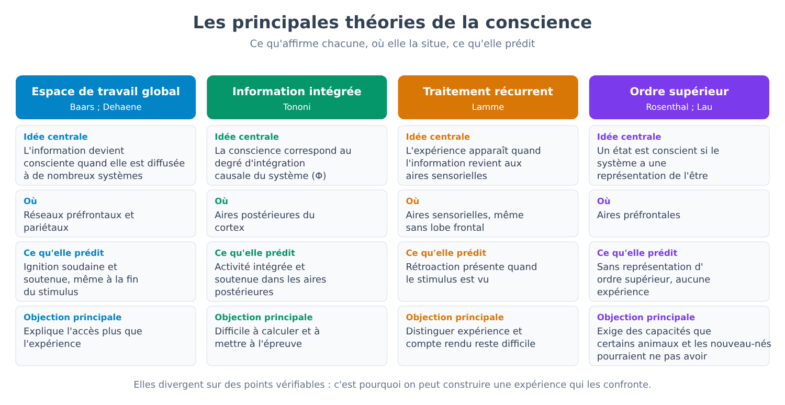
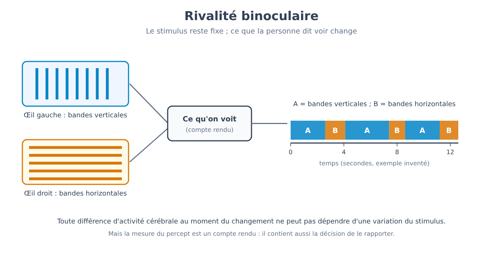
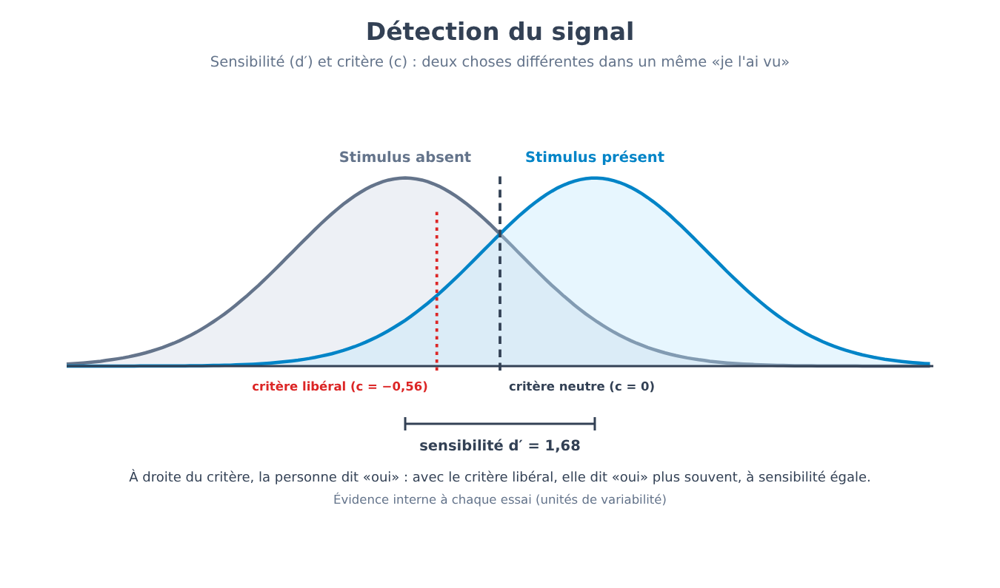
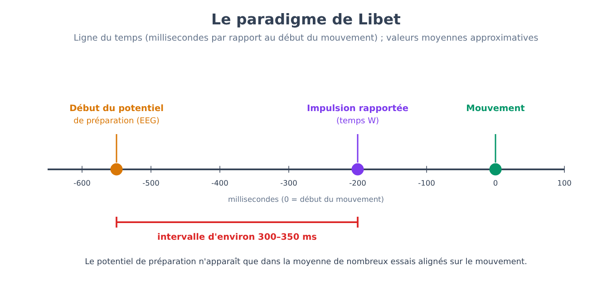
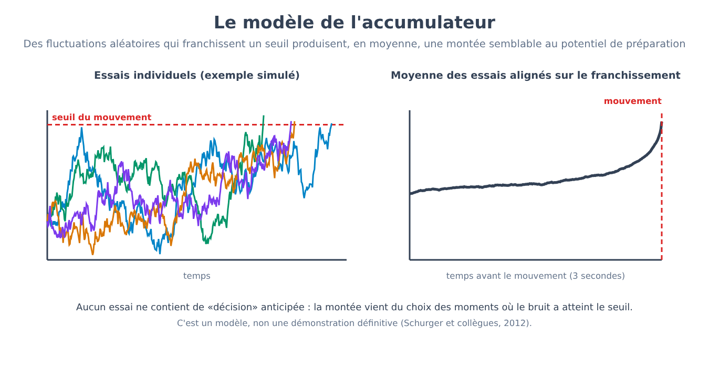
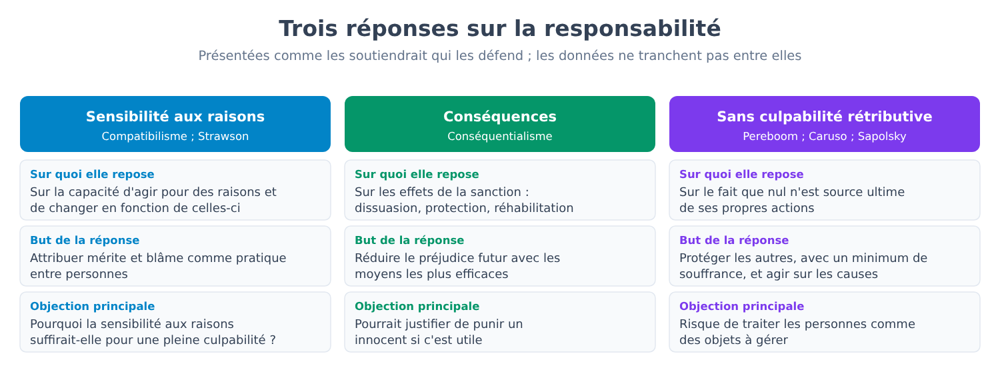
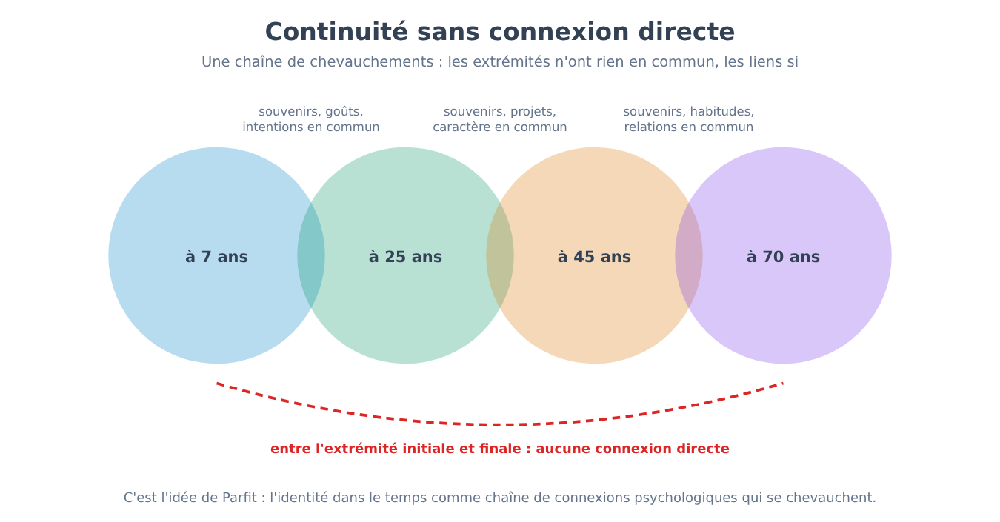
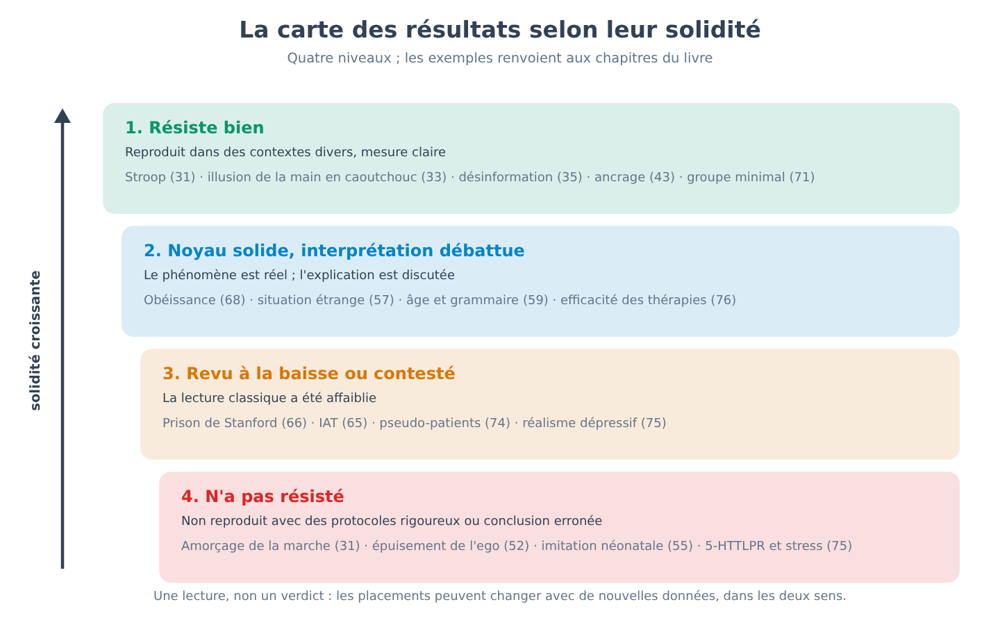

Partie XIII. Les trois questions qui restent
Chapitre 78 — Conscience : pourquoi c'est un problème et pas seulement un mystère à résoudre
[EN DEUX MOTS]
De nombreux chapitres de ce livre ont parlé de processus qui se déroulent à notre insu : perception, mémoire, décision. Reste à se demander ce qui distingue ce dont nous avons conscience de ce qui n'atteint pas la conscience, et pourquoi il y a « quelque chose que l'on éprouve » à voir du rouge ou à avoir mal aux dents. Ce chapitre distingue trois sens du mot « conscience », expose le problème que les chercheurs appellent « difficile » et les réponses qui lui ont été données, explique ce qu'est un corrélat neural et ce qu'il n'est pas, présente les principales théories et raconte la première confrontation expérimentale directe entre deux d'entre elles, conclue en 2025. Le but est de faire comprendre ce que l'on sait, ce qui est en discussion et ce que les expériences peuvent et ne peuvent pas trancher.
Toute personne qui lit cette page sait ce que signifie avoir une expérience : il y a une manière dont apparaît le rouge d'un feu de signalisation, une manière dont se perçoit le goût du café, une manière dont une dent fait mal. Personne n'a besoin de l'apprendre et personne ne peut le démontrer à quelqu'un d'autre. C'est aussi un fait que la psychologie scientifique, pendant presque tout le XXe siècle, a tenu le sujet à la marge : les chapitres 14–19 ont raconté comment le comportementalisme avait exclu du programme ce qui ne pouvait pas s'observer de l'extérieur, et les chapitres 29–31 ont montré combien de travail le cerveau accomplit à l'insu de l'intéressé. Depuis les années 1980 et 1990, la conscience est redevenue un objet de recherche expérimentale, et ce chapitre ainsi que le suivant disent ce qu'on en a fait.
Le titre du chapitre contient une distinction qu'il convient de clarifier d'emblée. Une énigme, au sens scientifique, est une question pour laquelle on sait à peu près quel type de réponse chercher : comment l'énergie est produite dans la cellule, comment un souvenir se consolide. Un problème, au sens qui nous intéresse ici, est une question pour laquelle on ne sait même pas à quoi ressemblerait une réponse satisfaisante. Sur la conscience, les chercheurs ne s'accordent pas sur ce second point, avant même de s'accorder sur le premier.
Trois choses que l'on appelle « conscience »
Le mot réunit au moins trois significations, et bien des discussions inutiles naissent de la confusion entre elles. La première est la vigilance (wakefulness, arousal) : l'état de celui qui est éveillé et réactif, par opposition à celui qui dort d'un sommeil profond, est sous anesthésie générale ou dans le coma. C'est la conscience comme niveau, que le chapitre 26 a abordée à propos du sommeil, et qui dépend de structures du tronc cérébral et du thalamus. Une personne peut être vigilante sans que cela dise grand-chose de ce qu'elle vit à ce moment-là.
La deuxième signification est la conscience d'accès (access consciousness), terme introduit par le philosophe Ned Block (1995) : le fait qu'une information soit disponible pour le système dans son ensemble, c'est-à-dire qu'elle puisse être rapportée en paroles, utilisée pour décider, mémorisée, combinée à d'autres informations. C'est une propriété fonctionnelle, que l'on peut étudier avec les méthodes du laboratoire : on demande à la personne ce qu'elle a vu et l'on compare sa réponse au stimulus.
La troisième est l'expérience phénoménale (phenomenal consciousness) : le fait qu'il y ait quelque chose que l'on éprouve à être dans un certain état. Les philosophes appellent qualia (qualia) les aspects qualitatifs de cette expérience, comme le rouge du rouge ou la douleur de la douleur. Là réside le problème : l'accès peut se mesurer, l'expérience est ce qui reste quand on a ôté tout ce que l'on peut mesurer de l'extérieur.
Désormais, lorsque le texte dira conscience (consciousness) sans autre adjectif, il entendra le fait d'avoir une expérience de quelque chose, au sens phénoménal ; lorsqu'il parlera d'accès ou de vigilance, il le dira. Que les deux derniers sens puissent se séparer, c'est-à-dire que l'on puisse avoir l'accès sans l'expérience ou l'expérience sans l'accès, est l'une des questions ouvertes, et non une thèse que le texte adopte.
Le problème que l'on dit « difficile »
En 1995, le philosophe David Chalmers proposa de diviser les questions sur la conscience en deux groupes. Les « problèmes faciles » concernent des mécanismes : comment le cerveau discrimine les stimuli, intègre les informations, contrôle le comportement, produit un compte rendu verbal de ce qui se passe en lui, distingue l'éveil du sommeil. On les dit faciles non parce qu'ils le seraient en pratique (ils exigent des décennies de travail) mais parce que l'on sait quel type d'explication chercher : on repère le mécanisme qui remplit la fonction. Le problème difficile (hard problem) est une autre question : pourquoi l'accomplissement de ces fonctions s'accompagne-t-il d'une expérience ? Même si toutes les fonctions étaient expliquées, selon Chalmers il resterait à dire pourquoi le processus ne se déroule pas « dans le noir ».
[QUESTION CONTROVERSÉE]
Les réponses au problème difficile se répartissent en quatre grandes familles, et aucune n'a de preuves décisives. La première, défendue entre autres par Daniel Dennett, soutient que le problème difficile, ainsi formulé, n'existe pas : une fois expliqués tous les mécanismes qui produisent nos jugements et nos comptes rendus sur l'expérience, il ne resterait rien à expliquer, et l'intuition qu'il manque quelque chose est un produit de la manière dont le cerveau se représente lui-même. Une variante radicale, l'illusionnisme (illusionism) de Keith Frankish, affirme que l'expérience phénoménale telle que la décrivent les philosophes est elle-même une illusion, et que la vraie tâche est d'expliquer pourquoi il nous semble l'avoir. La deuxième famille accepte le problème et propose que la conscience soit une propriété non réductible aux propriétés physiques connues : c'est le dualisme des propriétés, que Chalmers lui-même a défendu sous une forme qu'il qualifie de naturaliste. La troisième, le panpsychisme (panpsychism), soutient qu'une forme d'expérience est une caractéristique fondamentale de la matière, et que l'expérience humaine en est une combinaison complexe. La quatrième admet que le problème est réel mais que l'esprit humain n'a pas les outils pour le résoudre (la position parfois appelée « nouveau mystérianisme »). Dans l'enquête menée en 2020 auprès de philosophes professionnels (PhilPapers), environ 62 % ont déclaré que le problème difficile existe et environ 30 % qu'il n'existe pas ; les résultats sont repris ici d'une synthèse secondaire, et doivent se lire comme un instantané d'opinion et non comme une preuve.
Pourquoi un livre de psychologie expérimentale devrait-il s'en occuper ? Pour deux raisons. La première est que la réponse que l'on donne au problème difficile change ce qu'une expérience sur la conscience est jugée capable de démontrer. S'il n'y a rien au-delà des mécanismes, étudier les mécanismes est tout ce qu'il y a à faire ; s'il y a quelque chose au-delà, aucune liste de mécanismes ne suffira. La seconde est que les expériences se poursuivent de toute façon, et qu'elles le font en présupposant, parfois sans le dire, une réponse. Le chapitre suivant est consacré à ce que les instruments utilisés mesurent effectivement.
[ATTENTION AU SAUT LOGIQUE]
Du fait qu'aujourd'hui on ne sache pas expliquer l'expérience, il ne suit pas qu'on ne pourra jamais l'expliquer, ni que l'explication soit non physique. L'histoire de la science connaît des questions qui semblaient insolubles par principe (la différence entre matière vivante et non vivante, par exemple) et qui ont perdu leur caractère de problème lorsque les mécanismes ont été compris ; elle connaît pourtant aussi des questions restées ouvertes pendant des siècles. Le fait qu'une question soit difficile ne dit pas à laquelle des deux catégories elle appartient. Le saut inverse est tout aussi à éviter : du fait qu'une corrélation robuste ait été trouvée entre une activité cérébrale et une expérience, il ne suit pas que l'expérience soit « expliquée ».
Corrélats neuraux : ce que l'on cherche
Face à cette incertitude de fond, la recherche a adopté un objectif plus modeste et plus praticable. Dès 1990, Francis Crick et Christof Koch proposèrent de chercher les corrélats neuraux de la conscience (neural correlates of consciousness, NCC) : l'ensemble minimal d'événements et de mécanismes cérébraux qui, ensemble, suffisent à produire une expérience consciente déterminée. Le but était d'éviter de discuter de la nature de la conscience et de se concentrer sur une question que l'on peut soumettre à l'expérience : qu'est-ce qui change dans le cerveau lorsque la même information, physiquement identique, est vue consciemment ou non ?
Cette question impose un plan précis, dit plan contrastif (contrastive design) : on compare deux conditions dans lesquelles le stimulus est le même et où seul change le fait de l'avoir vu. On peut l'obtenir de plusieurs manières : en rendant le stimulus si faible qu'il n'est perçu que par moments, en le masquant avec un second stimulus, en présentant deux images différentes aux deux yeux (chapitre 79), ou en saisissant le moment où l'attention est ailleurs (la cécité à l'inattendu du chapitre 30). Dans tous les cas, on mesure l'activité cérébrale (avec les techniques du chapitre 24) et l'on cherche ce qui différencie les essais « vu » des essais « non vu ».
La littérature distingue ensuite des niveaux. Les conditions de fond (la vigilance et le fonctionnement du tronc cérébral et du thalamus) sont nécessaires, mais n'expliquent pas pourquoi l'on voit ceci et non cela. Les corrélats des contenus concernent en revanche la spécificité : l'activité de certaines populations de neurones accompagne la vision d'un visage, celle d'autres la vision d'une maison. Reste le problème, reconnu par les auteurs eux-mêmes, de séparer ce qui accompagne l'expérience de ce qui la précède (un processus de préparation, par exemple) et de ce qui la suit (la décision de la rapporter, la mémoire). Si on l'étudie en demandant aux personnes de rapporter ce qu'elles ont vu, une partie de ce que l'on mesure est l'acte de rapporter, et non l'expérience. Le chapitre 79 reviendra sur cette difficulté.
Quand la question devient clinique
La conscience n'est pas seulement un thème philosophique. Après un traumatisme crânien ou un arrêt cardiaque, certaines personnes passent des semaines ou des années dans un état où, au chevet, elles ne montrent aucun signe de conscience : elles ouvrent les yeux mais ne suivent pas du regard et ne répondent pas aux ordres. Les médecins distinguent l'état végétatif (vegetative state), dans lequel les signes comportementaux de conscience font défaut, et l'état de conscience minimale (minimally conscious state), dans lequel apparaissent des signes inconstants mais reproductibles. La question cruciale est de savoir si, derrière l'absence de réponse, il y a absence d'expérience ou seulement incapacité à l'exprimer.
En 2006, le groupe d'Adrian Owen rapporta le cas d'une jeune femme en état végétatif après un accident de la route qui, lors de l'imagerie par résonance magnétique fonctionnelle, lorsqu'on lui demandait d'imaginer jouer au tennis ou se promener dans sa maison, montrait une activité dans différentes régions du cerveau, semblable à celle de volontaires sains. En 2010, Martin Monti et ses collègues, dans un travail de plus grande ampleur, testèrent 54 patients présentant des troubles de la conscience (végétatifs et en état de conscience minimale) : cinq furent capables de moduler volontairement l'activité cérébrale en réponse aux instructions. L'un d'eux, un homme de 22 ans, fut invité à répondre à des questions par oui ou par non en imaginant jouer au tennis (oui) ou se promener dans sa maison (non) : il répondit correctement à cinq questions sur six, comme sa mère put le vérifier.
[LE PLAN DE L'EXPÉRIENCE]
Ce qui était manipulé. Les instructions données au patient : imaginer une activité motrice (jouer au tennis) ou une navigation spatiale (se déplacer dans sa maison), en alternance avec des périodes de repos.
Ce qui était mesuré. Le signal BOLD (chapitre 24) dans les régions qui, chez des volontaires sains, s'activent différemment dans les deux tâches : l'aire motrice supplémentaire pour le tennis, des régions pariétales et l'hippocampe et ses environs pour la navigation.
Ce qui était maintenu constant. Le protocole d'imagination, appliqué aussi à un groupe de volontaires sains, dont on connaissait les activations typiques.
Combien de sujets. Dans le travail de 2010 : 54 patients diagnostiqués en état végétatif ou de conscience minimale ; cinq montrèrent des réponses volontaires.
Ce qui aurait falsifié l'hypothèse. L'absence de toute différence spécifique entre les activations du patient dans les deux tâches, ou des différences non reproductibles d'une séance à l'autre.
Ce qui en est ressorti. Une fraction des patients montrait des réponses cohérentes avec la compréhension et l'exécution volontaire des tâches. L'absence de réponse au chevet ne suffit donc pas à exclure la conscience.
Si et comment cela a été répliqué. L'approche a été étendue par d'autres groupes avec différentes techniques, dont l'électroencéphalogramme ; les estimations de la fraction de patients présentant une conscience cachée varient beaucoup d'une étude à l'autre et dépendent des critères adoptés, c'est pourquoi le texte n'en donne pas de chiffre unique.
Le résultat a une valeur pratique immédiate (il change la manière d'évaluer les patients et de parler avec les familles), et il a une limite que les auteurs ont reconnue : un résultat négatif ne prouve pas l'absence de conscience, car le patient pourrait être conscient mais incapable d'exécuter la tâche, ou endormi à ce moment-là. La méthode mesure la capacité de suivre une consigne mentale ; elle ne mesure pas directement l'expérience.
Les principales théories
Des dizaines de théories ont été proposées sur les bases de l'expérience consciente. On peut les ordonner, au prix de quelques simplifications, en un petit nombre de familles. La comparaison qui suit sert à dire ce que chacune affirme, où elle situe la conscience et ce qu'elle prévoit dans une expérience, non à proclamer un vainqueur.
La théorie de l'espace de travail global (global workspace theory, GWT), proposée par Bernard Baars en 1988 et développée dans sa version neuronale par Stanislas Dehaene, décrit le cerveau comme un ensemble de systèmes spécialisés qui travaillent en parallèle et le plus souvent dans le noir. Une information devient consciente lorsqu'elle remporte une compétition et se diffuse à grande échelle vers de nombreux autres systèmes (mémoire, langage, planification), ce qui se produirait, pense-t-on, par une activation soudaine et soutenue d'un réseau étendu, avec de fortes contributions des aires préfrontales et pariétales, appelée ignition (ignition). C'est une théorie de l'accès : elle explique bien pourquoi ce qui est conscient est rapportable et utilisable, et laisse ouverte la question de l'expérience.
La théorie de l'information intégrée (integrated information theory, IIT), de Giulio Tononi, part de l'autre bout : des propriétés que l'expérience possède en elle-même (elle existe, elle est spécifique, unitaire, définie, structurée) et en déduit quelles propriétés physiques un système doit avoir pour la posséder. Son indice, noté par la lettre grecque Φ (phi), mesure à quel point un système est intégré, c'est-à-dire à quel point son comportement causal ne se décompose pas en ses parties. Elle prédit que la conscience siège dans les aires postérieures du cortex, où l'organisation est très intégrée, plutôt que dans les aires préfrontales ; et elle implique que la conscience dépende de la structure physique du système et non du programme qu'il exécute.
Les théories récurrentes (recurrent processing theories), associées à Victor Lamme, soutiennent que l'expérience apparaît lorsque l'information visuelle ne se borne pas à monter à travers les aires sensorielles mais revient en arrière par des circuits de rétroaction, et elles n'exigent pas l'implication préfrontale. Les théories de la pensée d'ordre supérieur (higher-order theories), associées à David Rosenthal et, dans leurs versions expérimentales, à Hakwan Lau, disent qu'un état est conscient lorsque le système a une représentation d'être dans cet état : de cette façon, la conscience requiert une forme d'autoreprésentation. D'autres propositions, parmi lesquelles les théories fondées sur la prédiction et sur la représentation de l'attention de Michael Graziano, tentent d'expliquer pourquoi les systèmes qui se modélisent comme conscients en viennent à dire qu'ils le sont.

[QUESTION CONTROVERSÉE]
Les théories divergent précisément sur les points vérifiables. Si l'espace de travail est valide, la conscience requiert l'ignition préfrontale et pariétale ; si la théorie de l'information intégrée est valide, une organisation intégrée des aires postérieures suffit et est nécessaire, et le lobe frontal participe au compte rendu plus qu'à l'expérience. Cette divergence permet une expérience dans laquelle les prédictions opposées sont confrontées, et c'est précisément ce qui a été fait.
La première confrontation directe : une collaboration entre adversaires
Dans le champ de la conscience, comme dans bien d'autres, chaque groupe tend à concevoir des expériences que sa propre théorie explique bien. Pour réduire ce risque, on a expérimenté une procédure appelée collaboration adversariale (adversarial collaboration) : les partisans de deux théories rivales, avec un groupe neutre, s'accordent avant l'expérience sur les résultats que chaque théorie prévoit, et s'engagent publiquement à considérer leur propre théorie comme falsifiée ou affaiblie si les prédictions ne se réalisent pas. Le consortium Cogitate a appliqué cette méthode à deux théories, l'espace de travail global et l'information intégrée, et a publié les résultats dans Nature le 30 avril 2025.
[LE PLAN DE L'EXPÉRIENCE]
Ce qui était manipulé. Les personnes voyaient des images isolées (visages, objets, lettres, symboles dépourvus de sens) selon trois orientations différentes, présentées pendant 0,5, 1,0 ou 1,5 seconde, tout en cherchant une cible préétablie : on pouvait ainsi faire varier ce que l'on voyait, pendant combien de temps et si cela était pertinent pour la tâche.
Ce qui était mesuré. L'activité cérébrale avec trois techniques complémentaires : imagerie par résonance magnétique fonctionnelle (IRMf), magnétoencéphalographie (MEG) et électroencéphalographie intracrânienne (iEEG), cette dernière chez des patients porteurs d'électrodes implantées pour des raisons cliniques.
Ce qui était maintenu constant. Le paradigme, les instructions et les critères d'analyse, tous enregistrés à l'avance, avec les prédictions des deux théories signées par leurs partisans respectifs avant le recueil des données.
Combien de sujets. 256 personnes au total : 120 en IRMf, 102 en MEG et 34 en iEEG.
Ce qui aurait falsifié les théories. Pour l'espace de travail : l'absence d'une activation préfrontale (ignition) au début et à la fin du stimulus, ou l'absence d'information sur les contenus dans le cortex préfrontal. Pour l'information intégrée : l'absence d'une synchronisation soutenue dans les aires postérieures pendant toute la durée du stimulus.
Ce qui en est ressorti. Les catégories des stimuli (visage, objet, lettre) pouvaient être décodées à partir des aires postérieures et, plus brièvement, à partir du cortex préfrontal ; l'orientation se décodait à partir des aires postérieures mais presque pas à partir des aires préfrontales. Aucune électrode préfrontale ne montra le signal d'allumage à la fin du stimulus que l'espace de travail prévoyait. Seul un petit nombre d'électrodes postérieures suivit la durée du stimulus, ce qui soutint en partie l'information intégrée ; mais l'information sur l'orientation dans les aires postérieures s'éteignit après environ une demi-seconde, contrairement à la prédiction de cette théorie, et la synchronisation soutenue attendue n'apparut pas. Les mesures de connectivité ne soutinrent nettement ni l'une ni l'autre.
Si et comment cela a été répliqué. Cela fait partie d'un programme plus vaste de collaborations adversariales ; au moment où l'on écrit, aucune réplication indépendante n'est connue.
Comment interpréter le résultat ? Les auteurs ont conclu que les données sont compatibles avec certaines prédictions des deux théories et mettent en difficulté des aspects centraux de l'une et de l'autre : pour l'information intégrée, l'absence de synchronisation soutenue dans les aires postérieures ; pour l'espace de travail, l'absence d'ignition à la fin du stimulus et la faible représentation préfrontale de certaines caractéristiques conscientes. Ils ont ajouté que certaines de ces difficultés pourraient concerner aussi d'autres théories qui font des prédictions semblables. Les réactions ont été diverses : certains partisans ont contesté que les prédictions testées soient les prédictions essentielles de leur théorie, et certains commentateurs ont souligné que l'expérience met en question la théorie à propos de ce qui en ressort, non de ce qu'est l'expérience.
[TIENT-ON ENCORE ?]
Un autre épisode montre à quel point le champ est tendu. En septembre 2023, alors que les premiers résultats circulaient sous forme préliminaire, 124 chercheurs signèrent une lettre ouverte soutenant que la théorie de l'information intégrée devait être considérée comme une « pseudoscience » tant qu'elle ne serait pas formulée de façon empiriquement vérifiable ; la lettre a suscité des réponses de sens opposé et, sur le plan éditorial, la prise de distance par rapport à ce langage de la part de ceux qui ont publié la collaboration adversariale dans Nature. Le texte ne prend pas position sur cette étiquette : il observe seulement que ce qui a été mis à l'épreuve en 2025 n'est pas la théorie dans son ensemble mais certaines de ses prédictions expérimentales, et que l'article lui-même résume ainsi les résultats : ils s'accordent avec certaines prédictions des deux théories et en mettent sérieusement en difficulté certains piliers. Le décodage du contenu conscient était compatible avec les deux ; le maintien du contenu dans le temps contredisait ce que chacune prévoyait (aucune synchronisation soutenue dans le cortex postérieur pour l'information intégrée, aucune ignition à la disparition du stimulus pour l'espace de travail) ; l'analyse de connectivité préenregistrée ne soutenait aucune des deux. Le débat sur la vérifiabilité, sur le choix des prédictions et sur la portée philosophique de la théorie se poursuit.
Et les machines ?
La question de savoir si un système artificiel peut être conscient devient pratique, et les théories donnent des réponses différentes précisément parce qu'elles divergent sur les prémisses. Ici, on quitte le terrain des données : aucune expérience actuelle n'est en mesure de trancher. Une théorie qui identifie la conscience à une certaine organisation fonctionnelle (comme l'espace de travail) laisse en principe ouverte la possibilité qu'un système artificiel doté de cette organisation soit conscient ; la théorie de l'information intégrée, qui attribue la conscience à la structure causale physique du système, affirme en revanche qu'un ordinateur numérique ne le serait pas, quel que soit le programme qu'il exécute. Le fait qu'un système produise des phrases comme « j'éprouve quelque chose » ne dit rien de l'expérience, parce que des phrases de ce genre abondent dans les textes sur lesquels les systèmes de langage sont entraînés. La prudence vaut dans les deux directions : il n'existe pas de raisons suffisantes ni pour attribuer la conscience à un programme ni pour l'exclure de manière définitive.
[CHIFFRES]
• Collaboration adversariale Cogitate (Nature, 30 avril 2025) : 256 participants (IRMf 120, MEG 102, iEEG 34) ; stimuli présentés pendant 0,5, 1,0 ou 1,5 seconde ; trois prédictions préenregistrées : décodage du contenu compatible avec les deux théories, maintien du contenu contraire aux deux, connectivité préenregistrée en faveur d'aucune.
• Lettre ouverte sur l'information intégrée (septembre 2023) : 124 signataires.
• Monti et collègues (2010) : 54 patients présentant des troubles de la conscience, cinq avec des réponses volontaires ; un patient répondit correctement à cinq questions sur six.
• Enquête PhilPapers 2020 (source secondaire) : environ 62 % des philosophes disent que le problème difficile existe, environ 30 % qu'il n'existe pas.
[MINI-CHRONOLOGIE]
• 1988 : Baars propose l'espace de travail global.
• 1990 : Crick et Koch proposent de chercher les corrélats neuraux de la conscience.
• 1995 : Chalmers formule le problème difficile ; Block distingue conscience d'accès et conscience phénoménale.
• 2004 : Tononi formule la théorie de l'information intégrée.
• 2006 : Owen et collègues : imagination motrice chez une patiente en état végétatif.
• 2010 : Monti et collègues : communication oui/non chez un patient présentant un trouble de la conscience.
• 2023 : lettre ouverte sur l'information intégrée.
• 2025 : publication de la collaboration adversariale Cogitate dans Nature.
[L'ESSENTIEL DU CHAPITRE]
• « Conscience » désigne au moins trois choses : la vigilance, l'accès (information disponible pour rapporter et décider) et l'expérience phénoménale (ce que l'on éprouve). Bien des malentendus naissent de leur confusion.
• Le problème difficile demande pourquoi les fonctions cérébrales s'accompagnent d'une expérience ; les réponses (négation du problème, illusionnisme, dualisme des propriétés, panpsychisme) ne sont pas tranchées par les données actuelles.
• La recherche expérimentale cherche les corrélats neuraux avec un plan contrastif (même stimulus, vu ou non vu), avec la difficulté de séparer ce qui accompagne l'expérience de ce qui la précède et la suit.
• Une fraction des patients sans signes au chevet montre, à l'IRM, des réponses volontaires (Monti et collègues, 2010) ; un résultat négatif, toutefois, ne démontre pas l'absence de conscience.
• Les principales théories divergent sur ce qui est vérifiable ; la première confrontation directe (Cogitate, 2025, 256 personnes) a mis en difficulté des aspects centraux des deux théories mises à l'épreuve sans proclamer de vainqueur.
• Quant à la conscience des machines, aucune expérience actuelle ne peut trancher, et les théories donnent des réponses opposées.
Chapitre 79 — Ce que mesurent les expériences sur la conscience
[EN DEUX MOTS]
Les expériences sur la conscience reposent presque toujours sur une seule chose : quelqu'un dit avoir vu ou ne pas avoir vu. Ce chapitre montre comment on construit un contraste entre « vu » et « non vu » (rivalité binoculaire, masquage), pourquoi le compte rendu ne mesure pas l'expérience mais une décision qui la concerne, comment la théorie de la détection du signal permet de séparer sensibilité et prudence, ce que changent les échelles de conscience et les paradigmes sans compte rendu, et ce qui reste de la question si l'expérience excède ce que l'on parvient à rapporter. C'est le chapitre du livre le plus sévère sur la méthode : il dit avec précision ce que l'on peut conclure d'une expérience sur la conscience et ce que l'on ne peut pas.
Le chapitre 78 a laissé en suspens une question pratique : si la conscience est ce que l'on éprouve, comment l'étudie-t-on en laboratoire ? La réponse honnête commence par un constat gênant. Une expérience sur la conscience a besoin que quelqu'un dise ce qu'il a vu, ou qu'une autre mesure indique qu'il l'a vu. Celui qui analyse les données a donc entre les mains le compte rendu, ou une mesure calibrée sur le compte rendu, et doit se demander chaque fois ce qu'il mesure : l'expérience, la décision de la déclarer, la capacité de s'en souvenir une seconde plus tard, ou la tendance de cette personne à dire « oui » dans le doute.
Le chapitre 1 avait déjà signalé un aspect de ce problème : les gens savent dire avec assurance ce qu'ils voient ou éprouvent, mais savent moins bien pourquoi ils ont agi comme ils l'ont fait, et peuvent confabuler des explications plausibles. Ici la cible est autre, mais la prudence est la même. Un compte rendu sur le contenu (« j'ai vu un visage ») est plus fiable qu'un compte rendu sur les causes, et pourtant lui aussi passe par une décision.
Le contraste vu/non vu
La méthode du chapitre 78, le plan contrastif, requiert un stimulus physiquement identique qui, dans certains essais, est perçu et, dans d'autres, ne l'est pas. Deux procédures produisent cette situation de façon contrôlable.
La première est la rivalité binoculaire (binocular rivalry). Si l'on présente à chaque œil une image différente (par exemple un visage à gauche et une maison à droite, de façon qu'elles ne puissent pas fusionner), la personne ne voit pas un mélange stable mais une alternance : pendant quelques secondes l'une des deux domine, puis l'autre, puis de nouveau la première, sans que le stimulus physique change. Le phénomène était connu de Giambattista della Porta en 1593 et fut décrit avec précision par Charles Wheatstone en 1838.

Pour qui étudie la conscience, c'est une occasion rare : le stimulus est constant, la perception change, et donc ce qui change dans le cerveau au moment du passage ne peut pas dépendre d'une variation du stimulus.
[LE PLAN DE L'EXPÉRIENCE]
Ce qui était manipulé. Deux images différentes, présentées une par œil de façon à entrer en rivalité ; dans les études sur les singes, des images telles que des réseaux d'orientations différentes ou des visages, chez l'être humain des visages et des maisons.
Ce qui était mesuré. Chez les singes, entraînés à signaler avec un levier quelle image ils voyaient, l'activité de neurones isolés dans diverses aires visuelles (études de Nikos Logothetis et collaborateurs, à partir de la fin des années 1980) ; chez l'être humain, par imagerie par résonance magnétique fonctionnelle, l'activité de régions sélectives pour les visages et pour les maisons (Tong et collègues, 1998).
Ce qui était maintenu constant. Le stimulus physique présenté à chaque œil pendant toute la durée de l'essai.
Combien de sujets. Peu d'animaux, étudiés longuement avec des enregistrements de nombreux neurones, dans les études de cellules isolées ; des groupes de volontaires sains dans les recherches d'imagerie.
Ce qui aurait falsifié l'hypothèse. Si l'activité d'une aire était restée identique quand le percept variait et n'avait suivi que le stimulus, cette aire n'aurait pas pu être considérée comme un corrélat de l'expérience.
Ce qui en est ressorti. Dans les aires visuelles les plus précoces (V1), seule une minorité de neurones suivait le percept, tandis que la plupart continuaient à suivre le stimulus physique ; en montant vers les aires du cortex temporal inférieur, la majorité des neurones changeaient d'activité avec le percept. Chez l'être humain, la région des visages et celle des maisons s'activaient en alternance avec ce que la personne déclarait voir.
Si et comment cela a été répliqué. Le résultat général (une dépendance au percept croissante le long de la hiérarchie visuelle) a été repris avec diverses techniques ; la valeur exacte des pourcentages dépend de l'espèce, de l'aire et du stimulus, et n'est pas rapportée ici.
La conclusion de ce corpus de recherches est que l'expérience visuelle n'est pas « écrite » en un seul point : l'activité des aires précoces reflète surtout ce qui arrive de l'œil, celle des aires plus élevées reflète de plus en plus ce que l'on voit. Mais la méthode a une limite qui compte ici : chez les singes, la mesure du percept était le levier actionné, chez l'être humain la déclaration de la personne. Toute différence d'activité observée au moment du changement contient donc aussi la préparation et l'exécution de ce geste.
La seconde procédure est le masquage (masking) : un stimulus (un mot, un visage, une forme) est montré pendant une fraction de seconde et immédiatement suivi ou précédé d'un second stimulus, le masque, qui en empêche l'identification. En faisant varier l'intervalle entre les deux, on peut amener le stimulus près du seuil, de façon qu'il soit vu dans certains essais et pas dans d'autres tout en étant, dans l'ensemble, identique. Sur cette base, on a observé que le traitement initial dans les aires sensorielles est souvent semblable dans les essais « vu » et « non vu », tandis que dans les essais « vu » apparaît ensuite (de l'ordre de trois à quatre cents millisecondes) une phase d'activité plus ample, soutenue et diffuse, en accord avec l'idée d'ignition du chapitre 78. La même méthode a permis les expériences de priming du chapitre 31, dans lesquelles un stimulus non identifié influence encore la réponse suivante.
[IDÉE REÇUE]
« Les images cérébrales ont montré où naît la conscience. » Les études de rivalité et de masquage montrent où et quand l'activité cérébrale change avec ce que la personne déclare avoir vu ; elles ne disent pas que cette région « produit » l'expérience. Le chapitre 24 avait présenté le problème de l'inférence inverse : du fait qu'une région s'active quand une personne voit, il ne suit pas que l'activation soit l'expérience, parce que la même région s'active dans de nombreuses autres conditions, et que la même activité peut jouer un rôle de préparation, d'attention ou de décision. Dans ce domaine l'avertissement pèse plus qu'ailleurs, parce que la variable à expliquer (être conscient de quelque chose) est définie à partir d'un compte rendu.
Ce qu'il y a dans un « je l'ai vu »
Supposons qu'on montre à deux personnes la même lumière faible, dans la moitié des essais, et qu'on leur demande de dire « oui » si elles l'ont vue et « non » sinon. La première dit « oui » dans 80 % des essais où la lumière était présente (réussites (hits)) et dans 20 % des essais où elle ne l'était pas (fausses alarmes (false alarms)). La seconde dit « oui » dans 92 % des essais avec lumière, mais aussi dans 39 % des essais sans. Qui voit le mieux ? On ne peut pas répondre en regardant seulement les réussites : la seconde personne en a davantage, mais elle a aussi bien plus de fausses alarmes, et pourrait simplement être plus disposée à dire « oui » dans le doute.
La théorie de la détection du signal (signal detection theory), déjà évoquée au chapitre 28 comme l'un des perfectionnements de la psychophysique, permet de séparer les deux composantes. On suppose que, dans chaque essai, l'évidence interne est une grandeur variable, de moyenne plus élevée quand le stimulus est présent que quand il est absent ; la personne dit « oui » quand l'évidence dépasse un niveau appelé critère (criterion). La distance entre les deux distributions, mesurée en unités de variabilité, est la sensibilité (sensitivity, d′) ; la position du critère dit à quel point la personne est encline à répondre « oui ».
[FORMULE]
d′ = z(C) − z(F) et c = −[z(C) + z(F)] / 2
Où :
• d′ (d prime) est la sensibilité : la qualité avec laquelle la personne distingue la présence de l'absence du stimulus ; elle vaut 0 si la personne ne distingue rien et croît avec la capacité de discrimination (elle est sans unité, car mesurée en écarts types) ;
• C est la proportion de réussites (réponses « oui » quand le stimulus était présent) et F la proportion de fausses alarmes (réponses « oui » quand il était absent) ;
• z( ) est la transformation qui convertit une proportion en la valeur correspondante sur la courbe normale standard (par exemple z(0,50) = 0, z(0,84) ≈ 1) ;
• c est la position du critère : elle vaut 0 si la personne est équidistante entre « oui » et « non », est négative si elle tend à dire « oui » même avec peu d'évidence (critère libéral) et positive si elle tend à dire « non » (critère prudent).
Exemple de calcul. Première personne : C = 0,80 et F = 0,20, donc z(0,80) ≈ 0,84 et z(0,20) ≈ −0,84 ; d′ = 0,84 − (−0,84) = 1,68 et c = −(0,84 − 0,84) / 2 = 0. Seconde personne : C = 0,92 et F = 0,39, donc z(0,92) ≈ 1,41 et z(0,39) ≈ −0,28 ; d′ = 1,41 − (−0,28) ≈ 1,69 (1,68 avec les valeurs non arrondies) et c = −(1,41 − 0,28) / 2 ≈ −0,56. Une troisième personne avec C = 0,62 et F = 0,08 (z ≈ 0,31 et −1,41) a d′ ≈ 1,7 et c ≈ +0,55. Les trois personnes voient aussi bien (d′ d'environ 1,7) ; elles diffèrent seulement par la prudence : la seconde répond « oui » facilement, la troisième avec réticence.

La leçon pour la recherche sur la conscience est directe. Si une expérience compare les essais « vu » et « non vu » d'une personne, ou de deux groupes, et que les conditions diffèrent par le critère plus que par la sensibilité, la différence d'activité cérébrale peut refléter la décision de dire « oui » plus que l'expérience. Un moyen de maîtriser le problème est de construire des conditions dans lesquelles la performance (la capacité de discriminer) est égale et où seule change la déclaration d'avoir vu : dans le travail de Hakwan Lau et Richard Passingham (2006), par exemple, deux conditions de masquage donnaient la même exactitude dans la tâche et un degré différent de conscience rapportée, et les différences d'activité entre les deux furent lues comme plus proches de la conscience que de la performance. C'est un raisonnement élégant, et sa conclusion reste discutée : elle dépend du fait que l'égalité de la performance porte sur la même tâche que celle pour laquelle on mesure la conscience.
Échelles, paris et confiance
Si « oui/non » est une mesure pauvre, on peut demander davantage. L'échelle de conscience perceptive (perceptual awareness scale, PAS), proposée par Ramsøy et Overgaard en 2004, demande à la personne de classer l'expérience sur quatre degrés : aucune expérience du stimulus, une impression vague, une expérience presque claire, une expérience claire. On laisse ainsi parler de la gradualité au lieu d'imposer une coupure nette, au prix de s'en remettre à une échelle dont la signification peut varier d'une personne à l'autre. Une autre stratégie consiste à demander à la personne de parier sur l'exactitude de sa propre réponse : si la conscience est présente, on s'attend à des mises élevées quand on a raison et basses quand on se trompe. Mais les paris mesurent aussi l'aversion au risque, comme le rappelle la littérature sur la décision du chapitre 44, et ne résolvent pas le problème du critère, ils le déplacent. Les évaluations de confiance dans sa propre réponse (chapitre 46) offrent une mesure de métacognition, et la confiance peut se dissocier de l'expérience.
[ATTENTION AU SAUT LOGIQUE]
Aucune de ces échelles ne mesure l'expérience : elles mesurent un compte rendu, chaque fois avec un ensemble différent d'hypothèses. Du fait que deux conditions diffèrent sur l'échelle, il ne suit pas qu'elles diffèrent quant à la conscience, et du fait qu'elles ne diffèrent pas, il ne suit pas que la conscience soit identique. Le choix de l'échelle est déjà un choix théorique, et la même donnée lue avec une échelle à deux degrés ou à quatre peut donner des conclusions opposées, comme le montre le cas suivant.
Voir sans voir ?
Après des lésions du cortex visuel primaire (V1), certaines personnes rapportent être aveugles dans une portion du champ visuel. Dans les années 1970, Lawrence Weiskrantz et ses collaborateurs observèrent que, si l'on présentait des stimuli dans cette zone et qu'on demandait de deviner (par exemple si une forme était horizontale ou verticale, ou où se trouvait un point lumineux), les patients répondaient bien au-delà du hasard tout en disant ne rien voir. Le phénomène prit le nom de vision aveugle (blindsight). À la lecture la plus radicale, un traitement visuel sans aucune expérience, la littérature a ajouté une distinction : dans une variante, les patients n'ont aucune conscience du stimulus, dans une autre ils perçoivent que quelque chose a changé (un mouvement, par exemple) sans expérience proprement visuelle.
[TIENT-ON ENCORE ?]
La vision aveugle est un phénomène réel, en ce sens que la performance supérieure au hasard en l'absence de déclaration de vision a été reproduite chez de nombreux patients et dans de nombreux laboratoires. Son interprétation la plus forte est moins solide, à savoir qu'elle démontrerait une vision totalement dépourvue d'expérience. Morten Overgaard et ses collègues (2008, chez une seule patiente porteuse d'une lésion occipitale) ont observé que, lorsqu'on offre à un patient une échelle à plusieurs degrés (comme la PAS) au lieu de « je vois/je ne vois pas », une partie des réponses correctes s'accompagne d'une impression faible, que la question à deux seules réponses obligeait à classer comme « rien ». Si le critère du patient est prudent (après une lésion, il a de bonnes raisons de ne pas se fier à ce qu'il voit), une vision dégradée mais présente pourrait être déclarée absente. Pour cette raison aussi, le champ ne considère pas la question comme close ; le point méthodologique, en tout cas, vaut indépendamment de qui a raison : déclarer « rien » est une décision.
Prérequis, conséquences et paradigmes sans compte rendu
Le chapitre 78 a rappelé que ce que l'on mesure au moment du « vu » peut être un prérequis (l'attention, la préparation) ou une conséquence (la décision de rapporter, le souvenir du stimulus). Pour séparer ces ingrédients, on a développé les paradigmes sans compte rendu (no-report paradigms) : l'idée est de déduire le contenu de l'expérience de mesures qui n'exigent de déclarer rien du tout, comme les mouvements oculaires involontaires qui suivent la direction perçue dans une rivalité, ou le diamètre de la pupille, et de comparer l'activité cérébrale des essais où le compte rendu est demandé avec celle des essais où il ne l'est pas. En 2015, Naotsugu Tsuchiya et ses collègues les présentèrent comme un moyen d'extraire « les vrais corrélats neuraux » en les débarrassant de ce qui relève du fait de rapporter. Dans certaines études, l'ample onde tardive d'activité qui accompagne le « vu » (comme la composante appelée P3b, dans l'électroencéphalogramme) se réduit ou disparaît quand le compte rendu n'est pas demandé, ce qui suggère qu'une partie du signal classique de l'ignition relève de la préparation et de la communication de la réponse plus que de l'expérience.
Le résultat est important parce qu'il n'est pas neutre entre les théories. Celui qui pense que la conscience dépend de l'ample diffusion préfrontale voit dans le redimensionnement des signaux tardifs une menace ; celui qui la situe dans les aires postérieures y lit un soutien. Les paradigmes sans compte rendu ont cependant eux aussi un problème : pour savoir que la direction du regard correspond au percept, il faut l'avoir calibrée dans des conditions où les personnes rapportaient le percept, et l'on suppose que la correspondance tient quand elles ne le font pas. Toute voie de sortie hors du compte rendu passe par une première fois où le compte rendu existait.
L'expérience excède-t-elle ce que l'on parvient à rapporter ?
Il reste une dernière question, peut-être la plus difficile à traiter avec les outils décrits. En 1960, George Sperling montra pendant 50 millisecondes des matrices de lettres (par exemple trois rangées de quatre) et demanda d'en rapporter le plus possible : les personnes s'en rappelaient en moyenne de trois à cinq, environ un tiers des douze. Puis il introduisit une variante : immédiatement après la disparition de la matrice, un son indiquait quelle rangée rapporter. Comme la personne ne savait pas à l'avance quelle rangée serait demandée, la performance sur cette rangée estimait ce qui était disponible de l'ensemble de la matrice : environ 75 % des lettres, c'est-à-dire plus que ce que l'épreuve de compte rendu complet pouvait laisser penser. La disponibilité s'évanouissait toutefois vite : après environ une seconde de délai du son, les deux performances coïncidaient.
[LE PLAN DE L'EXPÉRIENCE]
Ce qui était manipulé. Le type de compte rendu (complet ou partiel, c'est-à-dire limité à une rangée indiquée par un son) et le délai entre la disparition de la matrice et le son (0, 150, 500 et 1000 millisecondes).
Ce qui était mesuré. Le nombre de lettres rapportées correctement.
Ce qui était maintenu constant. La matrice de lettres, le temps d'exposition (50 millisecondes) et les instructions.
Combien de sujets. Un petit groupe d'observateurs entraînés, selon l'usage de la psychophysique de l'époque.
Ce qui aurait falsifié l'hypothèse. Si le compte rendu partiel n'avait pas dépassé le compte rendu complet, il n'y aurait eu aucune évidence que davantage que ce que l'on parvient à rapporter était disponible dans le registre sensoriel.
Ce qui en est ressorti. Avec le compte rendu complet, de trois à cinq lettres sur douze ; avec le compte rendu partiel immédiat, environ 75 % des lettres de la rangée indiquée, ce qui équivaut à environ neuf lettres sur douze disponibles ; avec des délais croissants, un déclin rapide jusqu'à la coïncidence après environ une seconde.
Si et comment cela a été répliqué. Le résultat de base a été reproduit de nombreuses fois et est à la base du concept de mémoire sensorielle du chapitre 36.
Le philosophe Ned Block a lu ces données d'une manière qui a donné lieu à un débat. La première interprétation est que les personnes voient consciemment toute la matrice, mais que le compte rendu est limité par la capacité de la mémoire de travail (chapitre 36), dans laquelle seules quelques lettres entrent pour être rapportées : l'expérience, autrement dit, excède l'accès. La seconde interprétation soutient que ce que l'on voit dans le détail est seulement ce qui est entré dans l'accès, et que le reste est une sensation générique de « beaucoup de lettres ». Daniel Dennett et Michael Cohen ont soutenu que la première thèse n'est pas vérifiable, parce que, pour sonder une expérience non rapportable, il faudrait la rapporter.
[QUESTION CONTROVERSÉE]
Que peut-on dire de correct ? Premièrement : les données montrent que l'information disponible dans le registre sensoriel dépasse ce que l'on parvient à rapporter, et c'est un fait sur la mémoire. Deuxièmement : elles ne montrent pas, à elles seules, si cette information était éprouvée. Troisièmement : ceux qui pensent qu'elle l'était disposent d'arguments (la richesse phénoménale de l'expérience quotidienne, certaines dissociations) et ceux qui pensent que non en ont d'autres (la facilité avec laquelle une impression de richesse se forme sans détails). Le problème n'est pas une imperfection des instruments : si la mesure de l'expérience est le compte rendu, la question d'une expérience qui ne peut être rapportée tombe hors du champ de ce que l'expérience peut contrôler. C'est le point où la méthode cesse d'être suffisante, et le choix entre les deux lectures dépend d'hypothèses philosophiques et de la théorie dont on part.
Ce que l'on peut conclure, et ce que l'on ne peut pas
En rassemblant les étapes, on peut dire avec une sécurité raisonnable qu'il existe des corrélats neuraux robustes du contenu de ce que l'on voit, que la dépendance au percept croît le long de la hiérarchie visuelle, et qu'une partie des signaux classiquement associés au « vu » dépend du fait de rapporter. On peut dire que le même stimulus, dans des conditions contrôlées, produit des réponses cérébrales différentes selon qu'il est déclaré vu ou non, et que cette différence ne coïncide pas avec la différence de sensibilité. On ne peut pas dire qu'une région déterminée « produise » la conscience, ni qu'une échelle donnée la mesure, ni que l'absence de compte rendu équivaille à l'absence d'expérience, ni, avec les données actuelles, que l'expérience excède ou non l'accès.
Celui qui lit un article sur la conscience peut utiliser trois questions, à chaque lecture. Qu'a-t-on demandé à la personne de faire ? Qu'est-ce qui différencie les deux conditions en dehors de l'expérience (attention, critère, préparation, souvenir) ? Et quelle théorie tenait pour acquise la lecture des données ? Ce sont les mêmes questions que le livre a appris à poser aux expériences sur l'attention, la mémoire et la décision ; ici elles sont plus importantes parce que le même type d'erreur passe plus facilement inaperçu.
[CHIFFRES]
• Sperling (1960) : matrices de 12 lettres (3 × 4) pendant 50 millisecondes ; compte rendu complet 3–5 lettres (environ 35 %) ; compte rendu partiel environ 75 % de la rangée indiquée ; déclin avec des délais de 0, 150, 500 et 1000 millisecondes, jusqu'à la coïncidence après environ une seconde.
• Rivalité binoculaire : décrite par Della Porta (1593) et par Wheatstone (1838).
• Détection du signal : C = 0,80 et F = 0,20 donnent d′ = 1,68 et c = 0 ; C = 0,92 et F = 0,39 donnent d′ = 1,68 et c = −0,56.
• Échelle de conscience perceptive : quatre degrés (aucune expérience, impression vague, expérience presque claire, expérience claire).
[MINI-CHRONOLOGIE]
• 1593 et 1838 : Della Porta et Wheatstone sur la rivalité binoculaire.
• Années 1950–1960 : théorie de la détection du signal.
• 1960 : Sperling, compte rendu partiel et mémoire sensorielle.
• Années 1970 : Weiskrantz et la vision aveugle.
• Dès 1989 : Logothetis et la rivalité binoculaire chez les singes.
• 1998 : Tong et collègues, rivalité binoculaire avec imagerie chez l'être humain.
• 2004 : échelle de conscience perceptive.
• 2006 : Lau et Passingham, performance égale et conscience différente.
• 2015 : Tsuchiya et collègues, paradigmes sans compte rendu.
[L'ESSENTIEL DU CHAPITRE]
• Les expériences sur la conscience comparent des essais « vu » et « non vu » avec le même stimulus (rivalité binoculaire, masquage) ; ce qu'elles mesurent est le changement de l'activité cérébrale en même temps que le compte rendu, non l'expérience en soi.
• Un compte rendu contient deux composantes, la sensibilité (d′) et le critère (c) : des personnes de même sensibilité peuvent dire « vu » dans des proportions très différentes, et une différence d'activité cérébrale peut refléter le critère plus que l'expérience.
• Les échelles de conscience, les paris et la confiance ajoutent de l'information mais ne résolvent pas le problème ; la vision aveugle montre que le choix entre une réponse à deux degrés et une à quatre peut changer l'interprétation.
• Les paradigmes sans compte rendu suggèrent qu'une partie des signaux tardifs classiques relève du fait de rapporter et non de l'expérience, mais ils dépendent à leur tour d'une calibration faite avec des comptes rendus.
• Savoir si l'expérience excède ce que l'on parvient à rapporter (données de Sperling, thèse de Block) est une question que l'expérience seule ne peut trancher, parce que la question porte précisément sur ce que le compte rendu n'atteint pas.
• Devant une nouvelle étude sur la conscience, il convient de demander : qu'a-t-on demandé à la personne, qu'est-ce qui différencie les conditions en dehors de l'expérience, quelle théorie guide la lecture.
Chapitre 80 — Libre arbitre : ce que disent les données
[EN DEUX MOTS]
On entend dire que les neurosciences ont démontré que le libre arbitre n'existe pas, parce que le cerveau « décide » avant nous. Ce chapitre expose les expériences sur lesquelles l'affirmation se fonde (Libet, Soon, Fried), les critiques méthodologiques qui les concernent (la moyenne sur les essais, le modèle de Schurger, le compte rendu de l'instant de la décision, la différence entre choix arbitraires et choix pondérés) et montre combien d'étapes séparent un résultat de laboratoire de la conclusion métaphysique. Il distingue en outre la donnée des positions philosophiques (déterminisme, compatibilisme, libertarisme), qui ne sont pas la même chose.
Le chapitre 33 a présenté le sentiment d'agentivité : la sensation d'être l'auteur d'une action, que le système nerveux construit par inférence et que l'on peut manipuler expérimentalement. Ce chapitre renvoyait à celui-ci une question plus radicale : si la sensation de décider est une construction, la décision est-elle réelle ? C'est le thème de l'expression « libre arbitre », et il convient de commencer par séparer trois questions que le discours courant confond.
La première est métaphysique : le monde physique, et donc aussi le cerveau, est-il tel que ce qui arrive à chaque instant est fixé par les conditions antérieures et par les lois de la nature ? Cette thèse s'appelle déterminisme (determinism), et la physique ne l'a pas tranchée de façon univoque (les interprétations de la mécanique quantique divergent). La deuxième est conceptuelle : qu'entendre par « libre » ? Cela peut vouloir dire pouvoir faire autrement à conditions égales, être la source ultime de ses propres actions, agir pour ses propres raisons sans contrainte, ou autre chose encore. La troisième est empirique, et c'est la seule dont ce livre peut s'occuper avec ses propres outils : que se passe-t-il dans le cerveau et dans l'expérience d'une personne lorsqu'elle décide, et quelle relation y a-t-il entre la sensation de décider et les processus qui produisent l'action ?
Les données dont il est question dans ce chapitre ne concernent que la troisième. Ce que l'on peut en conclure sur les deux premières dépend de prémisses que les expériences ne fournissent pas.
L'expérience de Libet
Dans les années 1960, deux chercheurs allemands, Hans Kornhuber et Lüder Deecke, avaient enregistré par électroencéphalogramme une lente augmentation d'activité dans les aires motrices, qui précède d'environ une seconde un mouvement volontaire : le potentiel de préparation (readiness potential, Bereitschaftspotential). Au début des années 1980, le physiologiste Benjamin Libet se demanda quel était le rapport entre ce signal et le moment où la personne sent qu'elle veut bouger.
[LE PLAN DE L'EXPÉRIENCE]
Ce qui était manipulé. Rien d'expérimental au sens strict : la personne était invitée à fléchir le poignet quand elle en sentait l'impulsion, sans planifier le moment à l'avance, en regardant un petit point qui tournait rapidement sur un cadran (un tour en environ deux secondes et demie).
Ce qui était mesuré. L'activité électrique de l'encéphale (le potentiel de préparation), le début du mouvement (par électromyogramme) et le moment où la personne déclarait, en indiquant la position du point, avoir ressenti pour la première fois l'impulsion de bouger (temps W, de l'anglais will).
Ce qui était maintenu constant. La tâche, le cadran et les instructions ; les essais, plusieurs dizaines par personne, étaient additionnés après avoir été alignés sur le début du mouvement.
Combien de sujets. Un petit groupe de volontaires sains (le nombre précis n'est pas rapporté dans les sources consultées pour cette édition).
Ce qui aurait falsifié l'hypothèse. Si le potentiel de préparation était apparu après le moment rapporté de l'impulsion, la séquence classique (intention, puis activité motrice) serait restée intacte.
Ce qui en est ressorti. Le potentiel de préparation commençait en moyenne environ une demi-seconde avant le mouvement ; l'impulsion consciente était située, en moyenne, environ 200 millisecondes avant le mouvement. Entre les deux événements s'écoulait donc un intervalle de l'ordre de 300–350 millisecondes, durant lequel l'activité cérébrale préparatoire était déjà en cours sans que la personne rapporte vouloir agir.
Si et comment cela a été répliqué. La séquence a été reproduite dans de nombreux laboratoires avec des variantes, bien que son interprétation soit encore aujourd'hui objet de discussion ; les points critiques sont exposés ci-dessous.

La lecture qu'en donna Libet lui-même fut plus nuancée que celle que l'expérience reçut par la suite. Il soutint que, si le déclenchement du mouvement était inconscient, la conscience pouvait encore intervenir dans les dernières centaines de millisecondes, pour bloquer l'action (un « veto », que le langage de vulgarisation a appelé free won't, c'est-à-dire « libre non-vouloir »). La lecture de vulgarisation et celle de nombreux commentateurs fut en revanche plus radicale : le cerveau décide avant que nous nous en apercevions, donc la sensation de décider est un épiphénomène.
Pourquoi l'expérience ne soutient pas la conclusion radicale
Les objections à cette lecture, élaborées par des philosophes et des neuroscientifiques à partir des années 1980, sont de plusieurs types, et il convient de les tenir distinctes.
Le compte rendu de l'instant de l'impulsion. Le temps W ne s'observe pas : c'est une déclaration, fondée sur la position d'un point qui tourne, à propos d'un événement interne, de surcroît très bref et peu défini. Le chapitre précédent a montré à quel point un compte rendu subjectif est une mesure indirecte. Dans le cas de Libet, les problèmes sont précis : le temps rapporté dépend de l'endroit où se dirige l'attention (et la tâche exige de la partager entre une expérience interne et un cadran en mouvement, comme au chapitre 30), et peut être déplacé par des événements postérieurs au moment que l'on cherche à dater. Dans un travail de Banks et Isham (2009), un son retardé présenté après le mouvement modifiait le moment rapporté de l'impulsion, ce qui suggère que l'instant déclaré est en partie reconstruit a posteriori. Daniel Dennett a ajouté que la méthode mesure quand une chose semble se produire, non quand elle se produit, et que les temps de transmission des signaux dans le cerveau compliquent la comparaison.
La moyenne sur les essais. Le potentiel de préparation ne se voit pas dans l'essai isolé : c'est le résultat d'une moyenne de nombreux essais alignés sur le moment du mouvement. Dans le signal brut d'un essai isolé, il n'y a que du bruit, et il n'est pas possible de dire à l'avance, en le regardant, qu'un mouvement va se produire. Le potentiel est une forme qui émerge de la moyenne, et il n'y a là rien de trompeur, à condition de ne pas le prendre pour un événement que l'on observe et qui précède chaque acte pris isolément.
Ce qu'est le potentiel de préparation. C'est ici que se situe la critique la plus incisive. En 2012, Aaron Schurger, Jacobo Sitt et Stanislas Dehaene proposèrent que le potentiel de préparation ne soit pas l'accumulation d'une décision inconsciente, mais l'effet d'une fluctuation spontanée. L'idée est que l'activité neurale oscille continuellement de façon aléatoire, et que lorsque l'on demande à la personne de bouger « quand elle en a envie », sans stimulus qui marque le moment, le mouvement se produit quand, par hasard, la fluctuation franchit un seuil. Si l'on aligne les essais sur le moment où le seuil est franchi, la moyenne de nombreuses fluctuations aléatoires produit nécessairement une montée graduelle qui ressemble au potentiel de préparation, même si aucun essai isolé ne contient une « décision » prise à l'avance. C'est l'effet que l'on obtient en choisissant les moments où un bruit aléatoire atteint un niveau élevé et en regardant ce qui s'est passé juste avant : on voit toujours une montée.

[TIENT-ON ENCORE ?]
L'interprétation classique du potentiel de préparation comme signe d'une décision déjà prise ne tient pas, ou tient bien moins qu'on ne le croyait. Le modèle à fluctuation spontanée reproduit la forme du potentiel et a trouvé un appui dans des expériences où les personnes, engagées dans des mouvements autodéclenchés, étaient interrompues par des stimuli surprise : les temps de réaction étaient plus courts quand l'activité cérébrale à ce moment-là était déjà proche du seuil, comme le modèle le prévoit. Ce n'est cependant pas une démonstration définitive, et d'autres études ont rapporté une activité préparatoire aux caractéristiques difficiles à expliquer par le seul bruit. Une revue statistique de 2021 a conclu que l'effet classique du potentiel de préparation est, selon les données disponibles, plus incertain que ne le laisse entendre la littérature de vulgarisation et repose sur peu d'études.
Le type de décision. L'expérience porte sur un mouvement arbitraire : fléchir le poignet maintenant ou dans un instant, un moment quelconque parmi de nombreux équivalents. Elle ne porte pas sur des décisions que l'on réfléchit et qui ont des conséquences. Un travail du groupe de Liad Mudrik et Uri Maoz (2019) a abordé directement le problème : les personnes devaient choisir entre deux associations caritatives auxquelles irait un don, dans certains essais avec pondération (les deux organisations étaient différentes et le montant comptait), dans d'autres sans raison (les organisations étaient indiquées comme équivalentes, et le choix était arbitraire). Le potentiel de préparation apparut dans les choix arbitraires et non dans les choix pondérés. Si le signal reflète en bonne partie le bruit qui précède un geste sans motif, le fait qu'il manque quand il y a un motif est précisément ce que le modèle de Schurger rendrait prévisible ; pour qui soutient le contraire, l'expérience montre au moins que le paradigme de Libet ne se généralise pas aux décisions qui comptent.
Le choix de la main. Patrick Haggard et Martin Eimer (1999) observèrent que, lorsque la personne choisit aussi avec quelle main bouger, le moment de l'impulsion rapportée est mieux corrélé à un signal qui dépend du choix de la main (le potentiel de préparation latéralisé) qu'au potentiel général. Cela suggère que le sentiment de vouloir se situe après qu'une partie de la décision est prise.
[ATTENTION AU SAUT LOGIQUE]
Du fait qu'un signal cérébral précède le moment où l'on déclare avoir voulu bouger, il ne suit pas que « le cerveau ait décidé » avant la personne. Il faut au moins quatre prémisses, chacune discutée : que ce signal soit une décision et non une fluctuation (l'objection de Schurger) ; que le moment déclaré soit une mesure exacte de l'instant de l'impulsion (les objections sur l'attention et sur la reconstruction) ; qu'un acte soit libre seulement si une décision consciente précède tout processus cérébral préparatoire (mais de nombreuses conceptions, en particulier compatibilistes, n'exigent pas que la conscience précède les processus cérébraux, parce qu'elles identifient celui qui décide au système entier, cerveau compris) ; et que ce qui vaut pour un geste arbitraire vaille pour un choix pondéré. Le saut inverse est tout aussi à éviter : la faiblesse de la conclusion de Libet ne démontre pas que le libre arbitre existe.
Prédire un choix à partir du cerveau : Soon et Fried
Deux autres lignes de recherche semblent donner plus de force à l'idée que le choix est précédé de signaux cérébraux. En 2008, Chun Siong Soon et ses collègues placèrent 12 personnes dans un appareil d'imagerie par résonance magnétique fonctionnelle, en leur demandant d'appuyer librement, quand elles en avaient envie, sur le bouton de gauche ou de droite ; un flux de lettres à l'écran servait à indiquer le moment où la personne sentait avoir décidé. Avec des techniques statistiques qui reconnaissent des motifs distribués d'activité dans le signal BOLD (chapitre 24), les auteurs parvinrent à prédire quel bouton la personne allait presser avec une exactitude d'environ 60 %, à partir d'une activité dans le cortex frontopolaire et le précunéus qui précédait de plusieurs secondes, jusqu'à environ sept à dix secondes selon la manière de tenir compte du retard du signal hémodynamique, le moment rapporté de la décision.
Deux remarques servent à lire le résultat. La première : le hasard, dans un choix entre deux alternatives, vaut 50 % ; une prédiction à 60 % se trompe dans quatre essais sur dix. Le résultat indique que dans l'activité cérébrale il y a une information faible mais systématique sur le choix futur, non que le choix soit déjà fixé. La seconde : le choix d'un bouton en séquence n'est pas indépendant des choix précédents, et des analyses ultérieures ont suggéré qu'une partie de la capacité prédictive pourrait dépendre des régularités de la séquence (qui a pressé à gauche deux fois tend à varier) et non d'un signal produit des secondes avant par la décision.
En 2011, Itzhak Fried, Roy Mukamel et Gabriel Kreiman étudièrent 12 patients atteints d'épilepsie pharmacorésistante, auxquels des électrodes profondes avaient été implantées à visée clinique, et enregistrèrent au total l'activité de 1 019 neurones isolés, surtout dans l'aire motrice supplémentaire et dans des régions voisines, pendant qu'ils exécutaient une tâche semblable à celle de Libet. Le recrutement des neurones commençait bien avant la décision déclarée, et une population d'environ 256 neurones permettait de prédire le mouvement avec une exactitude supérieure à 80 % dans les essais isolés, environ 700 millisecondes avant le moment où les patients disaient avoir décidé. Le résultat est plus fort que celui de Soon sur le plan de la précision, et concerne encore un geste arbitraire, avec les limites que ce type de tâche comporte : une activité préparatoire qui prédit un mouvement n'est pas, en soi, une décision qui échappe à la personne.
Le sentiment de vouloir comme inférence
Reste à expliquer pourquoi la sensation de décider est si convaincante, si son rapport avec les processus qui produisent le mouvement est moins direct qu'il n'y paraît. Le chapitre 33 a présenté une hypothèse : la sensation d'être l'auteur d'une action est le produit d'une inférence fondée sur la cohérence temporelle entre intention et effet. Le psychologue Daniel Wegner en a donné une formulation plus complète, la théorie de la causation mentale apparente (apparent mental causation) : la personne a le sentiment d'avoir causé une action lorsque trois conditions sont remplies. La pensée de l'action précède l'action à brève distance (priorité) ; la pensée est cohérente avec ce qui arrive (cohérence) ; il n'y a pas d'autres causes plausibles évidentes (exclusivité). Dans ce schéma, le sentiment de vouloir n'est ni un observateur passif ni un signal de causation, mais une estimation du fait que l'on a causé quelque chose. Les expériences dans lesquelles pensée et effet sont rendus coïncidents ou divergents confirment que l'estimation est manipulable : on peut sentir avoir causé ce que l'on n'a pas causé, et le contraire.
Cette hypothèse ne nie pas que la personne agisse ; elle dit que la sensation d'en être l'auteur est un instrument d'interprétation et non une preuve directe de la causalité. C'est une thèse sur la relation entre expérience et action, non sur la métaphysique. Et elle laisse ouverte la possibilité, que la tradition compatibiliste a toujours soutenue, que le libre arbitre se situe à un niveau plus élevé, celui des raisons et des projets de vie, et qu'il ne dépende pas du fait que l'impulsion de bouger un doigt soit ressentie en premier.
Ce que la donnée laisse ouvert : des positions distinctes de l'expérience
Les trois principales positions du débat philosophique ne sont pas des conclusions d'une expérience, et la donnée ne les tranche pas. Le compatibilisme (compatibilism) soutient que le libre arbitre est compatible avec le déterminisme : être libre signifie agir selon ses propres raisons, sans contrainte, et être sensible à des raisons différentes ; que les causes soient physiques n'ôte rien à cette capacité. Le libertarisme métaphysique (metaphysical libertarianism) soutient au contraire que le libre arbitre requiert l'indéterminisme et qu'il existe une indétermination à l'origine des choix ; il est défendu par une minorité, en général avec des théories sur la causalité de l'agent. L'incompatibilisme dur (hard incompatibilism) tient le libre arbitre pour impossible dans les deux cas, parce que si tout est déterminé nous ne sommes pas la source ultime de nos actions et que s'il est confié au hasard nous ne le sommes pas davantage. Dans l'enquête PhilPapers de 2020, dans la reprise d'une synthèse secondaire, environ 60 % des philosophes professionnels se sont déclarés compatibilistes, environ 19 % libertariens et environ 11 % sceptiques sur le libre arbitre.
Une expérience neuroscientifique peut mettre à l'épreuve une conception naïve particulière de la liberté (la décision consciente comme origine, instantanée, de toute action), et c'est ce que Libet et ses successeurs ont fait. Elle ne peut pas mettre à l'épreuve le compatibilisme, qui ne fait pas cette affirmation, ni le déterminisme, qui concerne le niveau de la physique. Sur ce que pensent les gens ordinaires, la recherche de philosophie expérimentale (Eddy Nahmias, Shaun Nichols et Joshua Knobe) a montré des réponses qui dépendent de la formulation : face à un cas abstrait, presque tous (environ 95 % dans la première expérience de Nichols et Knobe, 2007, avec 47 participants) disent que personne n'est pleinement responsable dans un monde déterministe, face à un cas concret et chargé d'émotion, comme un acte cruel, beaucoup attribuent une responsabilité même dans ce monde. Les intuitions ne sont donc pas une opinion unique et stable.
[CHIFFRES]
• Libet (1983) : potentiel de préparation environ une demi-seconde avant le mouvement ; impulsion rapportée environ 200 millisecondes avant ; intervalle d'environ 300–350 millisecondes.
• Soon et collègues (2008) : 12 participants ; prédiction d'un choix entre deux alternatives avec une exactitude d'environ 60 % (le hasard est 50 %), à partir d'une activité frontopolaire et du précunéus qui précède de plusieurs secondes la décision déclarée.
• Fried et collègues (2011) : 12 patients, 1 019 neurones ; population d'environ 256 neurones ; exactitude supérieure à 80 %, environ 700 millisecondes avant la décision déclarée.
• Enquête PhilPapers 2020 (source secondaire) : compatibilisme environ 60 %, libertarisme environ 19 %, pas de libre arbitre environ 11 %.
[MINI-CHRONOLOGIE]
• 1965 : Kornhuber et Deecke enregistrent le potentiel de préparation.
• 1983 : Libet et les temps de l'impulsion et de l'activité cérébrale.
• 1999 : Haggard et Eimer ; Wegner et Wheatley sur la causation mentale apparente.
• 2008 : Soon et collègues, prédiction par l'IRM.
• 2009 : Banks et Isham, le moment rapporté comme reconstruction.
• 2011 : Fried et collègues, neurones isolés.
• 2012 : Schurger et collègues, le modèle à fluctuation.
• 2019 : Maoz et collègues, choix arbitraires et pondérés.
[L'ESSENTIEL DU CHAPITRE]
• Les questions sur le libre arbitre sont au moins trois (métaphysique, conceptuelle, empirique) ; les expériences ne répondent qu'à la troisième.
• Dans le paradigme de Libet, une activité cérébrale préparatoire précède d'environ 300–350 millisecondes le moment rapporté de l'impulsion ; la conclusion que « le cerveau décide avant nous » exige toutefois que le signal soit une décision, que le moment rapporté soit exact et que la liberté requière que la conscience précède le cerveau.
• Le potentiel de préparation ne se voit que dans la moyenne de nombreux essais, et le modèle de Schurger le reproduit comme effet de fluctuations spontanées qui franchissent un seuil ; l'interprétation classique tient moins qu'on ne le croyait, sans être définitivement réfutée.
• Soon (environ 60 %, presque le hasard) et Fried (plus de 80 %, environ 700 millisecondes) prédisent des gestes arbitraires, non des choix pondérés ; dans les choix avec une raison, le potentiel de préparation fait défaut (Maoz et collègues, 2019).
• Le sentiment de vouloir est une inférence (priorité, cohérence, exclusivité), non une preuve directe de causalité ; cela ne dit pas si l'action est libre ou non.
• Compatibilisme, libertarisme et incompatibilisme dur sont des positions philosophiques distinctes de la donnée ; une expérience peut mettre à l'épreuve une conception naïve de la liberté, non ces positions.
Chapitre 81 — Responsabilité sans libre arbitre ?
[EN DEUX MOTS]
Si la psychologie et les neurosciences montrent que le comportement a des causes (gènes, environnement, situation, cerveau), qu'advient-il de la responsabilité ? Ce chapitre distingue ce que les études disent des effets de la croyance ou de la non-croyance au libre arbitre (un résultat célèbre n'a pas été répliqué), la manière dont les systèmes juridiques évaluent la responsabilité sans résoudre le problème métaphysique, et les principales positions philosophiques, exposées sous la meilleure forme que leurs défenseurs leur donneraient : la responsabilité fondée sur la capacité de répondre à des raisons, l'approche fondée sur les conséquences, et la proposition de renoncer à la faute au sens rétributif. Le chapitre n'indique pas laquelle est juste : il montre ce qui dépend des données et ce qui dépend des valeurs.
Au chapitre 80, la question était de savoir ce que disent les données sur le moment de la décision. Ici, la question change de nature : il ne s'agit plus de ce qui se passe dans le cerveau de celui qui choisit, mais de ce qui en découle pour la manière dont une société attribue mérite et faute, récompense et punit. Le lecteur a déjà rencontré ce passage sous forme expérimentale. Les chapitres 66–68 ont montré à quel point la situation peut pousser les personnes à agir de manières qu'elles auraient jugées inacceptables ; le chapitre 72 a raconté comment, en présence de plusieurs témoins, chacun ressent moins de responsabilité d'intervenir. Chaque fois, la question sous-entendue était : expliquer un comportement, est-ce l'excuser ? Ici, on l'aborde directement.
Une question en trois parties
Parler de responsabilité sans libre arbitre revient à réunir au moins trois questions différentes. La première est psychologique, et c'est la seule sur laquelle les données puissent se prononcer directement : que devient le comportement des personnes lorsqu'elles se convainquent que le libre arbitre n'existe pas ? La deuxième est juridique et pratique : comment les systèmes juridiques décident-ils déjà aujourd'hui qui est responsable, sans avoir résolu le débat métaphysique ? La troisième est philosophique et porte sur les valeurs : sur quelles bases, s'il en existe, peut-on justifier l'attribution de la faute et le châtiment, si les actions ont des causes qui les précèdent ?
Croire que l'on n'est pas libre change-t-il le comportement ?
Une idée très répandue, y compris parmi les chercheurs, est que l'encouragement à penser en termes déterministes rend les personnes moins responsables. En 2008, Kathleen Vohs et Jonathan Schooler publièrent une étude qui semblait la confirmer et qui eut un grand retentissement.
[LE PLAN DE L'EXPÉRIENCE]
Ce que l'on manipulait. Le contenu d'un texte lu avant une tâche : un passage soutenant que le libre arbitre est une illusion (tiré d'un livre de vulgarisation d'un neuroscientifique) ou un passage neutre ; dans une seconde expérience, des énoncés favorables au libre arbitre, contraires ou neutres.
Ce que l'on mesurait. Le comportement malhonnête dans une tâche de calcul : dans la première expérience, les participants devaient résoudre des problèmes arithmétiques sur un ordinateur qui, à cause d'un faux défaut, affichait la réponse à moins que l'on n'appuie sur une touche, et la touche pressée plus rarement indiquait plus de malhonnêteté ; dans la seconde, ils corrigeaient eux-mêmes les résultats d'une épreuve et étaient payés selon le nombre de bonnes réponses déclarées, ce qui permettait de comparer le gain déclaré au gain attendu.
Ce que l'on maintenait constant. La tâche, les consignes et la rémunération pour tous les groupes.
Combien de sujets. Dans la première expérience, trente étudiants universitaires, dans la seconde, quelques dizaines ; des échantillons petits.
Ce qui aurait réfuté l'hypothèse. L'absence de différences de malhonnêteté entre ceux qui avaient lu le texte déterministe et ceux qui avaient lu le texte neutre.
Ce qui en est ressorti. Ceux qui avaient lu le texte contre le libre arbitre trichaient davantage, dans les deux expériences.
S'il a été répliqué, et comment. Une série de tentatives indépendantes n'a pas reproduit l'effet ; la plus vaste, un travail multi-laboratoires publié en 2020 avec 621 participants, a rapporté que la manipulation n'influençait pas le comportement malhonnête (d = 0,076, intervalle de confiance à 95 % de −0,082 à 0,22, c'est-à-dire compatible avec l'absence d'effet comme avec un effet très faible).
Le résultat d'origine, en d'autres termes, ne tient pas. C'est un exemple à ajouter aux cas du chapitre 5 : un effet surprenant, obtenu avec de petits échantillons, qui avait une belle histoire à raconter, et qui n'a pas survécu à un contrôle à grande échelle. Cela ne démontre pas l'hypothèse inverse, à savoir que croire ou non au libre arbitre serait sans importance pour les comportements, parce que la littérature comprend d'autres études, sur d'autres comportements et avec d'autres manipulations, aux résultats mitigés ; cela indique plutôt que l'idée simple « celui qui ne croit pas au libre arbitre se comporte plus mal » n'a aujourd'hui pas de base empirique solide.
Une donnée de nature différente concerne les jugements sur la peine. Dans certaines expériences, des participants qui lisaient une description mécaniste du comportement humain (avec une forte composante neuroscientifique) proposaient en moyenne des punitions moins sévères dans des cas hypothétiques ; l'effet, de faible ampleur, dépend de la formulation et du type de cas, et n'a pas fait l'objet de réplications à grande échelle comparables à celle qui vient d'être évoquée. Le texte le rapporte pour signaler que les convictions sur la causalité du comportement semblent influer sur les jugements de mérite et de faute beaucoup plus que sur la conduite de ceux qui les acquièrent.
Comment le droit décide, sans résoudre le problème
Les systèmes juridiques n'attendent pas la solution du débat métaphysique. Le droit pénal de nombreux pays repose sur le principe que la faute exige que la personne ait été capable de comprendre la signification de l'acte et de contrôler sa propre conduite. En Suisse, l'article 19 du Code pénal établit que n'est pas punissable celui qui, au moment des faits, n'était pas capable d'apprécier le caractère illicite de son acte ou de se déterminer d'après cette appréciation, et que, si cette capacité était seulement restreinte, le juge atténue la peine ; en Italie, la même idée est exprimée par la notion d'imputabilité, c'est-à-dire la capacité d'entendre et de vouloir (article 85 du Code pénal), avec l'exclusion en cas de vice total de l'esprit et la diminution en cas de vice partiel. Les formulations changent, la structure est commune : le droit ne demande pas si l'action a été causée (elle l'est toujours), mais si celui qui l'a accomplie possédait certaines capacités, telles que la compréhension et le contrôle, au moment des faits.
Ce schéma a une conséquence utile pour la suite du chapitre. La différence qui compte pour la responsabilité n'est pas entre actions causées et actions non causées : toutes les actions ont des causes. Elle est entre les actions produites par un système qui fonctionne de manière sensible aux raisons et les actions produites par un système aux capacités compromises, par maladie mentale, intoxication, immaturité, contrainte. Les études de psychologie entrent dans le droit par là : les chapitres 73–77 ont montré comment on évalue et discute la souffrance psychique, le chapitre 60 a rappelé que les capacités de contrôle mûrissent au cours de l'adolescence, et les décisions des tribunaux sur le traitement des mineurs (par exemple, aux États-Unis, l'arrêt Roper contre Simmons de 2005 sur l'exécution de ceux qui ont commis les faits avant l'âge de dix-huit ans) ont explicitement fait appel à ce type de données.
[IDÉE REÇUE]
« Si le comportement a des causes, personne n'est responsable ; comprendre, c'est déjà justifier. » L'inférence ne tient pas et le droit ne l'adopte pas. Expliquer un comportement (reconstituer ce qui l'a produit) est une opération différente de le juger, et l'étude des situations des chapitres 66–68 n'a jamais soutenu que les personnes étaient excusées du fait d'avoir été poussées : elle a montré combien les contextes comptent, et pourquoi il est nécessaire de les concevoir avec soin. L'inférence opposée est tout aussi faible : du fait que les personnes soient en règle générale tenues pour responsables, il ne suit pas que cette attitude ait une justification ultime ; il suit seulement que c'est ainsi que cela fonctionne.
Quelques cas cliniques rendent concrète la question des degrés. L'un, décrit en 2003, concerne un homme qui développa à l'âge adulte, sans antécédents, des comportements sexuels socialement inacceptables en concomitance avec une tumeur dans la région orbitofrontale ; les comportements s'atténuèrent après l'ablation et réapparurent quand la tumeur repoussa (un compte rendu clinique de cas unique, et non une étude contrôlée, à reprendre avec prudence). Des cas de ce type ne résolvent pas la question générale : ils montrent qu'il existe des conditions dans lesquelles la capacité de contrôle change avec un facteur physique identifiable, et posent le problème de savoir où placer la frontière, un problème de gradation et non de tout ou rien.
Trois réponses philosophiques, sous leur meilleure forme
Les philosophes ont élaboré différentes réponses à la question de ce qui justifie la responsabilité. Chacune est exposée ici comme la soutiendrait celui qui la défend.
La responsabilité fondée sur la capacité de répondre à des raisons. Les compatibilistes (Daniel Dennett, Harry Frankfurt et d'autres) soutiennent que la question du déterminisme est mal posée, parce que ce qui importe dans la pratique est autre chose : si une personne agit à partir de raisons qui lui sont propres, comprend les conséquences, et changerait de conduite si elle avait de bonnes raisons de le faire. Cette capacité peut être vérifiée, peut exister à des degrés divers, et fait défaut chez le jeune enfant, chez le patient en proie au délire, chez celui qui est contraint. Dans une perspective inspirée de Peter Strawson (1962), en outre, la responsabilité n'est pas une théorie à démontrer, mais une pratique d'attitudes réactives (gratitude, ressentiment, pardon) qui fait partie de la vie entre personnes, et ce qu'il faut demander, c'est quand il est approprié de les adopter, non si la métaphysique les autorise. Le point faible signalé par les critiques est que, même si les comportements dérivent de causes que la personne n'a pas choisies (caractère, éducation, circonstances), on ne voit pas bien pourquoi la sensibilité aux raisons serait une bonne base pour la faute au sens plein.
La responsabilité comme instrument au service des conséquences. Une deuxième tradition, qui réunit philosophes et juristes, soutient que la peine se justifie par ce qu'elle produit : dissuader, protéger la société, rééduquer. Pour cette approche, le problème métaphysique perd de son poids : on peut maintenir un système de sanctions en fonction de ses effets, et l'évaluer avec les outils de la recherche empirique, par exemple sur l'efficacité des programmes de réhabilitation et sur l'effet dissuasif de peines plus ou moins sévères. Joshua Greene et Jonathan Cohen (2004) ont soutenu que les neurosciences ne changeraient rien au droit en vigueur dans l'immédiat, mais qu'à la longue, en rendant plus visible le mécanisme derrière chaque action, elles éroderaient l'intuition rétributive selon laquelle celui qui a mal agi mérite de souffrir, déplaçant le droit vers une approche orientée vers l'avenir. L'objection habituelle est qu'un système purement conséquentialiste pourrait, en théorie, justifier de punir un innocent si cela produisait de bons effets, et que la notion de mériter a sur la vie morale une prise que l'utilité ne parvient pas à remplacer.
Le renoncement à la faute rétributive. Une troisième position, soutenue par des incompatibilistes comme Derk Pereboom et Gregg Caruso, et sous une forme de vulgarisation par le neurobiologiste Robert Sapolsky (2023), conclut que, si personne n'est en dernière instance la source de ses propres actions, personne ne mérite de souffrir pour ce qu'il a fait. Il en découle, selon ses défenseurs, non l'absence de toute réponse au crime, mais un modèle différent, souvent comparé à la santé publique : de même que l'on met en quarantaine une personne contagieuse sans la considérer comme coupable, on peut limiter la liberté de celui qui est dangereux, pour protéger les autres, dans la mesure nécessaire, avec le minimum de souffrance et en tenant compte des causes sociales du crime. Les objections sont de deux ordres : qu'une pratique qui n'attribue pas de responsabilité risque de traiter les personnes comme des objets à gérer plutôt que comme des agents, et que l'idée de ne jamais blâmer soit difficile à concilier avec des attitudes comme le ressentiment et le pardon, que beaucoup considèrent comme une partie essentielle des relations.

[QUESTION CONTROVERSÉE]
Les trois positions ne se distinguent pas par les faits mais par les valeurs et les prémisses conceptuelles, et les faits sont les mêmes pour toutes : le comportement a des causes, la capacité de contrôle varie, les systèmes de sanction ont des effets mesurables. Une donnée empirique, par exemple qu'un programme de réhabilitation réduise les récidives davantage qu'une peine de détention, déplace le jugement de celui qui raisonne sur les conséquences et de celui qui rejette la faute rétributive ; elle laisse en grande partie inchangé celui de qui défend la responsabilité comme pratique d'attitudes réactives. Le lecteur peut trouver une position plus persuasive qu'une autre : ce que l'on ne peut pas dire, honnêtement, c'est que l'une ou l'autre ait été démontrée par la recherche.
Ce que la recherche peut et ne peut pas offrir
La recherche psychologique peut dire quelque chose de précis sur quatre points. Elle peut mesurer des capacités (comme l'inhibition, l'évaluation des conséquences, la sensibilité au renforcement) ainsi que leur développement et leur détérioration, comme rappelé au chapitre 60 pour l'adolescence. Elle peut évaluer les effets des sanctions et des programmes de prévention et de réhabilitation. Elle peut montrer où les intuitions de mérite et de faute dépendent de facteurs que nous ne voudrions pas voir compter (la formulation d'un cas, l'apparence de celui qui a agi, la vivacité du dommage, comme dans les chapitres 43 et 44 sur les heuristiques et la formulation). Et elle peut démasquer les conclusions générales tirées d'une seule expérience, comme celle de la malhonnêteté induite par la lecture déterministe.
Elle ne peut pas établir quelles valeurs doivent guider le système de sanctions, ni décider si la faute rétributive est justifiée. Sur ce point, le choix revient aux sociétés, par le moyen d'arguments, et la psychologie est utile à condition qu'elle ne se présente pas comme arbitre.
[ATTENTION AU SAUT LOGIQUE]
Du fait qu'une étude montre une anomalie cérébrale chez une personne qui a commis un délit, il ne suit pas que cette anomalie ait causé le délit, ni que la personne n'ait pas été responsable : beaucoup de personnes présentant la même anomalie ne commettent pas de délits, et le rapport de cause entre structure cérébrale et conduite, comme l'ont montré les chapitres 24 et 75, est plus faible que ce que les images suggèrent. Le saut opposé consiste à déclarer sans importance toute donnée biologique : la question, cas par cas, est de savoir si la capacité de comprendre et de contrôler était compromise, et c'est sur ce point que les preuves cliniques et d'imagerie peuvent aider, avec la prudence qui s'impose.
[CHIFFRES]
• Vohs et Schooler (2008) : 30 étudiants dans la première expérience ; effet de malhonnêteté accrue après la lecture anti-libre-arbitre.
• Réplication multi-laboratoires (2020) : 621 participants ; d = 0,076, intervalle de confiance à 95 % de −0,082 à 0,22.
• Code pénal suisse, art. 19 : non-punissabilité en cas d'incapacité totale d'apprécier le caractère illicite de l'acte ou de se déterminer d'après cette appréciation ; atténuation en cas d'incapacité partielle.
• Code pénal italien, art. 85, 88 et 89 : capacité d'entendre et de vouloir ; vice total et partiel de l'esprit.
[MINI-CHRONOLOGIE]
• 1962 : Strawson, les attitudes réactives.
• 2001 : Pereboom, Living without Free Will.
• 2003 : cas clinique de tumeur orbitofrontale et comportement.
• 2004 : Greene et Cohen, les neurosciences et le droit.
• 2005 : arrêt Roper contre Simmons (États-Unis).
• 2008 : Vohs et Schooler.
• 2020 : réplication multi-laboratoires.
• 2023 : Sapolsky, Determined.
[L'ESSENTIEL DU CHAPITRE]
• La question de la responsabilité a trois parties : psychologique (ce qui change dans le comportement selon que l'on croit ou non au libre arbitre), juridique (comment on décide déjà aujourd'hui) et philosophique (sur quoi fonder faute et peine) ; seule la première est directement empirique.
• L'effet célèbre selon lequel lire un texte déterministe fait tricher davantage n'a pas été répliqué dans la tentative la plus vaste (621 participants, d = 0,076) : il n'y a pas de base solide pour l'idée que croire au déterminisme rende pire.
• Les systèmes juridiques ne demandent pas si une action est causée, puisqu'elle l'est toujours, mais si celui qui l'a accomplie avait les capacités de compréhension et de contrôle ; la responsabilité est une question de degré.
• Les trois principales réponses philosophiques (responsabilité comme sensibilité aux raisons, approche par les conséquences, renoncement à la faute rétributive) ont chacune des points forts et des objections ; les données ne les départagent pas.
• Expliquer un comportement n'équivaut pas à l'excuser, et du fait que l'on soit en règle générale tenu pour responsable, il ne suit pas que l'attribution de la faute ait une justification ultime : ce sont deux sauts opposés à éviter.
Chapitre 82 — Identité personnelle dans le temps
[EN DEUX MOTS]
Celui qui lit cette page a un âge, un corps, des souvenirs et des traits de caractère qui, au cours de sa vie, ont changé presque entièrement, et pourtant il dit « je » comme s'il parlait toujours de la même personne. Ce chapitre distingue entre être la même personne (identité numérique) et se ressembler (identité qualitative), présente les principales théories philosophiques (mémoire, continuité psychologique, corps, récit) comme des hypothèses à confronter aux données et non comme des données, et rassemble ce que la psychologie sait : combien les personnes changent, combien elles sous-estiment leur propre changement, ce qui conduit les autres à dire que quelqu'un « n'est plus lui », et pourquoi le soi qui vit et le soi qui se souvient peuvent donner des indications opposées. Le soi apparaît comme une construction ; ce qu'il faut en conclure est une autre question.
Une personne de soixante-dix ans et l'enfant de sept ans qu'elle a été ont peu de choses en commun : un corps en grande partie renouvelé (même si beaucoup de neurones ne sont pas remplacés), peu de souvenirs partagés, des goûts, des convictions et des capacités très différents. Et pourtant personne ne trouve étrange de dire que cet enfant est devenu cette personne, et que la personne est responsable d'une promesse faite par lui. Le chapitre 81 a montré combien ce présupposé est important pour la responsabilité : la faute et le mérite sont attribués à une personne et sont recueillis, des années plus tard, par une personne en apparence différente. Ce qui fait de deux moments de la vie deux moments de la même personne est la question de l'identité personnelle, et de nombreux chapitres précédents ont ajouté une pièce à la réponse.
Deux sens de « le même »
Il convient de commencer par distinguer. On dit que deux choses sont les mêmes en deux sens différents. Deux voitures identiques sorties de la même usine sont les mêmes au sens où elles se ressemblent en tout, mais ce sont deux voitures : c'est l'identité qualitative (qualitative identity). La voiture que j'ai achetée hier et que j'ai encore aujourd'hui, même si entre-temps j'en ai changé les pneus, est la même voiture, une seule : c'est l'identité numérique (numerical identity). L'identité personnelle dans le temps est une question numérique : elle demande ce qui fait que la personne d'aujourd'hui soit une seule et même personne avec celle d'hier, et pas seulement qu'elle lui ressemble. La psychologie peut mesurer la ressemblance, c'est-à-dire combien une personne change ; ce qui rend la personne « une seule » malgré le changement est une question qui engage des concepts, et c'est pourquoi les philosophes s'en occupent depuis des siècles.
Ce que disent les théories : des hypothèses à mettre à l'épreuve
Le problème esprit-corps, rappelé au chapitre 78, a été posé par la philosophie bien avant que la psychologie existe ; celui de l'identité personnelle a la même histoire. Sur l'identité, les principales réponses sont au nombre de quatre, que l'on expose ici avec leurs arguments typiques. Ce sont des théories philosophiques, soutenues par des expériences de pensée (des situations imaginées), qui ne sont pas des données : elles servent à préciser ce que l'on entend, et à voir où les intuitions divergent.
La première est celle de John Locke (1690) : la personne reste la même dans la mesure où elle peut se rappeler ses pensées et ses actions passées. Le critère de la mémoire a un attrait immédiat, et une objection classique : le philosophe Thomas Reid observa qu'un officier désormais âgé, qui se souvient d'avoir été un jeune officier mais pas de l'enfant qui fut puni pour avoir volé des fruits, devrait être identique au jeune homme, le jeune homme à l'enfant, mais pas l'officier à l'enfant, ce qui viole le fait que l'identité soit transitive. Le chapitre 35 a en outre montré que les souvenirs sont des reconstructions imprécises et parfois fausses (chapitre 39), ce qui rend encore plus fragile l'idée de fonder l'identité sur la mémoire.
La deuxième réponse, développée par Derek Parfit (1984), élargit la première : ce qui compte est la continuité psychologique (psychological continuity), c'est-à-dire une chaîne de liens (souvenirs, intentions, croyances, traits de caractère) entre un moment et l'autre. Un lien isolé est une connexion psychologique ; l'identité, à des décennies de distance, n'exige pas qu'il y ait des connexions directes entre le début et la fin, mais seulement que la chaîne de chevauchements ne se rompe pas. C'est la manière dont on dit qu'un fil est unique même si aucune fibre ne court d'un bout à l'autre. Parfit tira de cette thèse une conséquence radicale, appelée réductionnisme (reductionism) : l'identité n'est pas un fait supplémentaire et profond, c'est la description d'une chaîne de relations psychologiques, et ce qui importe dans la vie n'est pas de savoir si « je » continuerai d'exister mais si ces relations persisteront. Il la défendit avec des cas imaginaires comme le téléporteur (un appareil qui détruit un corps et en recrée un identique ailleurs), qui font vaciller notre sens de ce que signifie survivre.

La troisième réponse est l'animalisme (animalism), défendu entre autres par Eric Olson : nous sommes des organismes biologiques, et la personne reste la même tant que reste le même organisme vivant, indépendamment de la mémoire ou de la personnalité ; une personne atteinte de démence grave, dans cette perspective, reste la même. La quatrième, représentée par des philosophes comme Marya Schechtman, est la perspective narrative : la personne se constitue à travers l'histoire qu'elle raconte d'elle-même, et les actions et les expériences d'un moment deviennent siennes en tant qu'elles entrent dans cette histoire. Chaque théorie explique bien certains cas et mal d'autres : les données nous aident à comprendre lesquelles de leurs prémisses empiriques tiennent, non à en élire une.
Combien les personnes changent, et combien nous croyons changer
Le chapitre 62 a distingué la stabilité d'ordre (si une personne conserve sa position par rapport aux autres) du changement du niveau moyen, et a montré que les traits de personnalité sont étonnamment stables en termes d'ordre mais changent en moyenne au cours de la vie (augmentation de la conscience, de l'agréabilité et de la stabilité émotionnelle, le principe de maturation). Le tableau, pour l'identité, est celui d'une continuité avec changement : la personne reste reconnaissable par rapport aux autres, et en même temps se transforme.
Une autre donnée concerne la manière dont les personnes voient ce changement. En 2013, Jordi Quoidbach, Daniel Gilbert et Timothy Wilson publièrent dans Science un travail qui réunissait six études portant sur plus de 19 000 personnes âgées de 18 à 68 ans. On demandait aux participants de remplir des mesures de personnalité, de valeurs et de préférences (goûts musicaux, plat préféré, meilleur ami), dans une version où ils décrivaient comment ils étaient dix ans auparavant ou comment ils pensaient qu'ils seraient dans dix ans. Dans chaque tranche d'âge, les personnes rapportaient beaucoup de changements dans le passé et en prévoyaient peu dans le futur : une illusion de fin de l'histoire (end-of-history illusion), en ce sens que l'on se considère, aujourd'hui, comme le produit achevé d'un long processus.
[TIENT-ON ENCORE ?]
Le phénomène décrit est un schéma robuste dans le plan transversal, mais son interprétation est discutée. L'étude comparait des personnes d'âges différents, non les mêmes personnes au fil du temps (un plan longitudinal, comme ceux du chapitre 60, serait plus adapté pour mesurer le changement réel). On a en outre noté que le souvenir de son propre passé est reconstructif (chapitres 35 et 39) et peut exagérer les différences, et que même une prévision rationnelle pourrait être « aucun changement » : celui qui sait qu'il changera mais pas dans quelle direction n'a aucune raison de prévoir une valeur différente de l'actuelle. Le résultat indique que les gens ne s'attendent pas à changer autant qu'ils changent en moyenne, non qu'ils en soient incapables.
Cela a une conséquence pratique pour les décisions à long terme, comme l'épargne, la santé, les engagements définitifs : la personne qui décide aujourd'hui pour elle-même dans vingt ans le fait en pensant à quelqu'un qui lui ressemble plus que cela n'arrivera probablement. Un courant de recherches sur le « soi futur » suggère que les personnes qui perçoivent ce soi futur comme plus étranger tendent à mettre moins de côté pour la vieillesse, et qu'interagir avec une image vieillie de soi rend plus enclin à préférer des sommes plus importantes mais différées à des sommes moindres immédiates (Hershfield et collègues, 2011, quatre études) ; les résultats sont suggestifs, proviennent de peu de groupes, et sont à considérer comme préliminaires.
Ce qui fait dire de quelqu'un « il n'est plus lui »
Une manière d'étudier l'identité sans parler de métaphysique est de demander aux gens ce qui, selon eux, fait que quelqu'un reste lui-même. Dans les travaux de Nina Strohminger et Shaun Nichols (2014), on présentait à des échantillons de participants de brèves histoires dans lesquelles une personne subissait un changement (de mémoire, de goûts, de capacités, de caractère) et on demandait si elle était encore la même. Les changements les plus importants dans le jugement n'étaient pas ceux de mémoire, comme le suggérerait la tradition de Locke, mais ceux de caractère moral : une personne qui devient moralement pire est jugée « une autre » plus facilement que celle qui perd ses souvenirs. C'est l'hypothèse du soi moral (moral self) : dans la psychologie ordinaire, ce qui semble essentiel à une personne est, plus que ce dont elle se souvient, ce qu'elle juge juste et la manière dont elle traite les autres.
En 2015, les mêmes auteurs étendirent la comparaison à des personnes réelles : 248 proches, en majorité des conjoints ou partenaires, de patients atteints de démence frontotemporale, de maladie d'Alzheimer ou de sclérose latérale amyotrophique (qui touche le mouvement sans altérer l'esprit). Dans la démence frontotemporale, où changent souvent le comportement social et moral, les proches rapportaient la perte d'identité la plus forte, suivie de la maladie d'Alzheimer, et la plus faible dans la sclérose latérale amyotrophique ; la différence ne s'expliquait pas par le degré général de déclin, et l'identité perçue suivait surtout les changements des traits moraux. Les données doivent être lues avec prudence (groupes limités, jugements des proches, non mesures objectives), mais elles vont dans le même sens que les résultats expérimentaux : le sentiment que quelqu'un est « le même » dépend, pour ceux qui l'entourent, davantage du caractère que des souvenirs.
Qui décide, le soi qui vit ou le soi qui se souvient ?
Le chapitre 46 a introduit la distinction entre le soi qui vit et le soi qui se souvient et, avec l'expérience de la main plongée dans l'eau froide (1993), a montré que la mémoire d'une expérience est dominée par le pic et par la fin, et non par la somme de ce que l'on a éprouvé instant après instant ; il a aussi laissé en suspens la question de savoir lequel des deux doit l'emporter dans les choix (46 → 82). On peut voir maintenant pourquoi la question touche l'identité. Les décisions sur l'avenir (quelles vacances refaire, quel traitement affronter) sont prises par le soi qui se souvient, qui pèse le pic et la fin, et risquent de choisir des expériences que le soi qui vit a vécues comme pires ; celui qui choisit en revanche d'après la somme des instants donne la parole au soi qui vit, mais néglige que les personnes se définissent, pour une bonne part, à travers ce dont elles se souviennent d'avoir vécu. Kahneman lui-même l'a présenté comme un problème sans réponse simple.
[QUESTION CONTROVERSÉE]
On peut soutenir deux lectures. Celui qui donne la priorité au soi qui vit observe que le bien-être est fait d'expériences, et qu'une expérience de douleur reste douloureuse même si la mémoire l'adoucit : une personne qui répète une expérience pire parce qu'elle s'en souvient mieux commet une erreur à son propre détriment. Celui qui donne la priorité au soi qui se souvient observe que les personnes vivent aussi de leur propre histoire, et que les expériences importantes (la naissance d'un enfant, une escalade, un deuil) ont de la valeur aussi pour ce qu'elles signifient dans le récit d'une vie, qui n'est pas la somme des moments ; soutenir que le récit est une erreur de mesure présuppose que le bien-être se réduit à l'expérience momentanée, thèse en soi discutable. Les données disent que les deux soi divergent et comment ; elles ne disent pas à qui donner le poids.
L'histoire de soi
La perspective narrative a un correspondant psychologique : la recherche de Dan McAdams et d'autres sur l'identité narrative (narrative identity), c'est-à-dire l'histoire intériorisée et en évolution qu'une personne construit pour donner unité et but à sa propre vie. Ces études analysent les récits autobiographiques et relient certains thèmes (par exemple les séquences « de rédemption », dans lesquelles une expérience négative est suivie d'une issue positive) au bien-être et à la santé mentale. Le lien est observé surtout dans des études transversales : on ne sait pas avec certitude si se raconter sa vie d'une certaine manière améliore le bien-être, ou si celui qui va mieux raconte sa vie de cette manière. Que de telles histoires soient des constructions, et non des enregistrements, le chapitre 1 le montre : la confabulation, la reconstruction des souvenirs, la tendance à réécrire ses propres choix pour les justifier (chapitre 69).
Le soi comme construction
En remettant les chapitres ensemble, l'image qui émerge est assez cohérente. Le sentiment que le corps est le mien se construit à partir de signaux multisensoriels et peut se déplacer sur une main en caoutchouc (chapitre 33). Le sentiment d'être l'auteur de mes actions est une inférence (chapitres 33 et 80). Les souvenirs sur lesquels repose l'histoire personnelle sont reconstruits (chapitres 35–39). Les explications que je donne de mes comportements peuvent être des confabulations (chapitre 1). Les personnes dont les deux hémisphères sont séparés chirurgicalement montrent, en conditions de laboratoire, que l'unité de leur propre expérience peut se comporter, dans certaines tâches, comme si elle n'était pas unitaire (chapitre 23), même si l'interprétation de ces résultats (deux consciences ou une ?) est discutée et que des études ultérieures ont mis en doute les lectures les plus radicales.
[ATTENTION AU SAUT LOGIQUE]
« Le soi est une construction » n'équivaut pas à « le soi est une illusion » ni à « le soi n'existe pas ». L'argent, le mariage ou un gouvernement sont eux aussi des constructions, produites par des processus et des pratiques, et pourtant ils ont des effets réels et vérifiables. Dire que le soi est construit signifie qu'il est produit par des processus (perceptifs, mnésiques, narratifs) que les études décrivent : cela ne dit pas que ces processus ne produisent rien, ni que ce qu'ils produisent soit dépourvu de valeur ou d'unité. Le saut en sens contraire consiste à soutenir que, puisque le sens de soi est si fort, il doit correspondre à une entité simple et permanente : la force d'un sentiment, comme le montrent les chapitres sur la perception, ne suffit pas à établir ce qui le produit.
La psychologie ne peut pas dire quelle théorie de l'identité est vraie, parce que la question porte sur ce que nous voulons dire par « même personne ». Elle peut dire combien et de quelle manière les personnes changent, ce que les autres considèrent comme essentiel chez une personne, comment les deux soi divergent dans les choix, et de quels processus résulte le sens d'être une seule personne dans le temps. Ce sont des données qui contraignent les théories : une théorie qui fonderait l'identité sur la mémoire devrait compter avec le caractère reconstructif des souvenirs, et une qui la fonderait sur le caractère avec son instabilité partielle. Elles ne choisissent pas entre les théories à la place de ceux qui les soutiennent.
[CHIFFRES]
• Quoidbach, Gilbert et Wilson (2013) : six études, plus de 19 000 participants de 18–68 ans ; dans chaque tranche d'âge, on prévoyait moins de changement que l'on n'en rapportait dans le passé de dix ans.
• Strohminger et Nichols : les changements de caractère moral pèsent plus que ceux de mémoire dans les jugements d'identité ; chez les proches de patients atteints de démence frontotemporale, des jugements de « plus la même personne » plus fréquents que chez ceux atteints de sclérose latérale amyotrophique (résultats à revérifier dans les détails numériques).
• Cold-pressor (Kahneman et collègues, 1993) : expérience déjà traitée au chapitre 46.
[MINI-CHRONOLOGIE]
• 1690 : Locke et le critère de la mémoire.
• 1984 : Parfit, Reasons and Persons.
• 1993 : Kahneman et collègues, le pic-fin (chapitre 46).
• 2013 : Quoidbach et collègues, illusion de fin de l'histoire.
• 2014–2015 : Strohminger et Nichols, le soi moral.
[L'ESSENTIEL DU CHAPITRE]
• L'identité personnelle dans le temps est une question d'identité numérique (être une seule personne), non de ressemblance ; la psychologie mesure la seconde, la première est une question conceptuelle.
• Les théories principales (mémoire, continuité psychologique, animalisme, récit) sont des hypothèses philosophiques soutenues par des cas imaginaires ; les données contraignent leurs prémisses mais n'en élisent aucune.
• Les personnes montrent une stabilité d'ordre avec un changement du niveau moyen ; et tendent à sous-estimer combien elles changeront (illusion de fin de l'histoire, à l'interprétation discutée).
• Dans les jugements ordinaires, le caractère moral pèse plus que les souvenirs pour décider si quelqu'un est encore la même personne.
• Le soi qui vit et le soi qui se souvient divergent ; les données montrent comment, non auquel des deux donner la priorité.
• Le soi est une construction de processus perceptifs, mnésiques et narratifs ; « construction » ne signifie pas « illusion ».
Chapitre 83 — Ce que la psychologie sait, ce qu'elle croit savoir, ce qu'elle ne sait pas
[EN DEUX MOTS]
Ce chapitre fait le bilan de tout le livre, mais non comme un résumé par sujets : il ordonne les résultats rencontrés selon leur solidité, non selon leur renommée. Il explique avec quels critères on assigne à un résultat une place dans une échelle (ce qui le rend robuste, ce qui le rend fragile), montre des exemples des quatre niveaux (résultats solides, résultats solides dans leur noyau mais à l'interprétation discutée, résultats revus à la baisse ou contestés, résultats qui n'ont pas tenu), énumère les questions qui restent ouvertes et dit ce que la psychologie ne peut pas savoir avec ses propres méthodes. Il se termine par les questions à poser à toute nouvelle qui commence par « une étude a démontré ».
Le premier chapitre commençait par un constat : l'esprit est un objet difficile parce qu'on ne peut pas l'observer directement, parce que celui qui l'étudie est fait de la même matière que ce qu'il étudie, et parce que chacun est convaincu de le connaître déjà. Après quatre-vingt-deux chapitres, le bilan n'est ni celui, triomphal, de qui montre une discipline qui aurait résolu ses propres problèmes, ni celui, liquidateur, de qui soutient que la psychologie n'est pas une science. Il est plus utile, et plus honnête, de tracer une carte : ce que l'on peut dire avec confiance, ce que l'on peut dire avec réserves, ce qui a été démenti, ce que personne ne sait encore.
Une précision sur la méthode de la carte. La solidité d'un résultat ne coïncide pas avec sa célébrité, ni avec son ancienneté : certains des résultats les plus célèbres du livre sont parmi les plus fragiles, et certains des plus solides ne sont jamais sortis des manuels. Elle ne coïncide pas non plus avec le fait d'être surprenant : le chapitre 5 a montré que la sélection qui récompense les surprises tend à favoriser précisément les résultats les moins fiables.
Les critères : ce qui rend un résultat solide
Les critères utilisés pour construire l'échelle sont ceux que le livre a appris à utiliser, un par un, dans les premiers chapitres. On peut les résumer en six questions, et un résultat est d'autant plus solide qu'il en franchit davantage.
La première concerne le plan (chapitre 2) : y a-t-il une comparaison avec un groupe de contrôle, une manipulation, une assignation aléatoire ? Une observation sans comparaison ne distingue pas une explication de ses alternatives. La deuxième concerne la mesure (chapitre 3) : ce que l'on mesure est-il le construit que l'on dit étudier, et est-il fidèle et valide ? La troisième concerne l'échantillon et la statistique (chapitres 4 et 5) : combien de personnes, quelle est la taille de l'effet, avec combien de degrés de liberté dans l'analyse, avec quelle probabilité d'un résultat dû au hasard ? La quatrième concerne la réplication : a-t-il été reproduit par d'autres, dans d'autres laboratoires, dans d'autres pays, de préférence avec un protocole enregistré à l'avance ? La cinquième concerne la généralisation : vaut-il seulement pour des étudiants universitaires de pays riches, ou aussi ailleurs ? La sixième concerne l'explication : est-ce un résultat descriptif (on observe ceci) ou un mécanisme (cela arrive pour cette raison), et les alternatives ont-elles été exclues ?
Une donnée aide à donner du poids à ces questions. Le Reproducibility Project (chapitre 5), qui a tenté de répliquer 100 études publiées dans trois revues, a trouvé que seulement 36 % des 97 réplications d'effets originellement significatifs ont de nouveau atteint la significativité, avec des effets en moyenne égaux à environ la moitié des effets originaux, avec des différences selon les domaines (environ 50 % en psychologie cognitive, environ 25 % en psychologie sociale) ; les projets Many Labs (le deuxième, de 2018, a répété 28 effets dans plus de soixante laboratoires) ont donné un résultat cohérent, avec environ la moitié des effets non répliqués. Le tableau ne dit pas que la psychologie est en ruine : il dit que la confiance doit être graduée, et que le travail de graduation est faisable.
Niveau 1 : ce qui tient, et tient bien
Un premier groupe de résultats a passé presque tous les contrôles : ils ont été reproduits de nombreuses fois, avec des matériels et des laboratoires différents, souvent avec des réplications coordonnées. Sur ces résultats, les données convergent depuis des décennies. En sont des exemples les phénomènes de l'attention et de l'automatisme (la tâche de Stroop, chapitre 31 ; la cécité à l'inattendu, chapitre 30), la perception du visage (l'effet d'inversion, chapitre 32) et du corps (l'illusion de la main en caoutchouc, chapitre 33), la nature reconstructive de la mémoire (l'effet de désinformation, chapitre 35 ; le paradigme des mots critiques, chapitre 39), la profondeur de traitement (chapitre 37), les heuristiques et les biais du jugement (ancrage et cadrage, chapitres 43 et 44 ; l'erreur de conjonction et la tâche de Wason, chapitre 45), le calibrage de la confiance (chapitre 46), la règle du pic-fin (chapitre 46), le conditionnement classique et opérant dans leurs aspects de base (chapitres 15–19), l'effet Flynn (chapitre 64), le groupe minimal (chapitre 71) et l'absence de lien entre vaccin contre la rougeole et autisme (chapitre 77).
Qu'ont en commun ces exemples ? Ce sont pour la plupart des phénomènes définis de manière précise, mesurés avec des méthodes qui ne dépendent pas de celui qui les applique, observés dans de nombreux échantillons et souvent avec des résultats cohérents d'une culture à l'autre. Ils n'expliquent pas tout, ni même presque tout : ils décrivent des régularités dans des contextes circonscrits. Un résultat solide, au sens de la carte, n'est pas un grand résultat : c'est un résultat sur lequel on peut compter, pour ce qu'il dit.
Niveau 2 : le noyau tient, l'interprétation est discutée
Le deuxième groupe comprend des résultats réels dont l'explication, ou la portée, sont en discussion. L'obéissance (chapitre 68) tient sur le plan qualitatif, mais les critiques méthodologiques sont lourdes et les réexamens historiques ont réduit la lecture la plus simple. La préférence des nouveau-nés pour les motifs semblables à des visages (chapitre 55) et les expériences de violation d'attente (chapitre 56) sont des données reproduites avec des interprétations en conflit. La situation étrange de l'attachement (chapitre 57) est un instrument qui tient, avec des catégories dont l'universalité est discutée ; l'âge d'arrivée et la grammaire (chapitre 59) montrent un effet réel avec des explications alternatives ; la prise de risque entre pairs (chapitre 60) tient, avec un modèle à deux systèmes discuté. En clinique, l'efficacité des psychothérapies et des médicaments (chapitre 76) tient avec des effets modérés et avec la discussion sur ce qui les produit (facteurs communs ou techniques spécifiques), et les classifications diagnostiques (chapitre 74) fonctionnent comme des outils pratiques d'une fidélité variable et d'une validité en discussion.
La raison pour laquelle il convient de distinguer ce niveau du précédent est que l'on y commet les deux erreurs opposées. Celui qui le prend pour le premier niveau transforme l'interprétation en donnée ; celui qui le prend pour le troisième jette le phénomène avec l'explication.
Niveau 3 : revu à la baisse ou contesté
Le troisième niveau rassemble des résultats qui, réexaminés, ont perdu une bonne part de leur force ou dont la lecture classique a été sérieusement mise en doute. Le bon Samaritain de Darley et Batson (chapitre 66) repose sur un petit échantillon et n'a pas été répété de manière directe ; la prison simulée de Stanford (chapitre 66) a été contestée dans sa méthode, de même que le camp d'été de Robbers Cave (chapitre 71). Le test d'association implicite (chapitre 65) a fait l'objet de méta-analyses en désaccord partiel. En psychologie clinique, l'expérience des pseudo-patients de Rosenhan (chapitre 74) a été mise en doute dans ses données ; le réalisme dépressif (chapitre 75) apparaît, dans les méta-analyses, comme un effet très faible ; l'étude de démontage de la thérapie cognitivo-comportementale (chapitre 76) est controversée. Dans beaucoup de ces cas, on peut dire que l'idée de fond conserve de l'intérêt (les situations comptent, les diagnostics dépendent de qui les pose), mais que l'expérience dont on est parti ne la soutient pas comme on le croyait.
Niveau 4 : ce qui n'a pas tenu
Le quatrième niveau réunit des résultats qui, mis à l'épreuve avec des protocoles rigoureux, ne se sont pas reproduits, ou dont la conclusion s'est révélée fausse. Le priming comportemental sur la vitesse de marche (chapitre 31) ne s'est pas répliqué avec une mesure objective et un échantillon plus large. L'épuisement de l'ego (chapitre 52), dans sa forme générale, a été mis à l'épreuve par vingt-trois laboratoires avec un protocole commun et a donné un effet proche de zéro. L'imitation néonatale (chapitre 55), dans l'étude longitudinale portant sur 106 enfants, n'est pas apparue ; l'estimation des trente millions de mots (chapitre 59) ne tient pas comme description fiable ; l'interaction entre le gène du transporteur de la sérotonine et le stress (chapitre 75) n'a pas résisté aux méta-analyses ; la comparaison d'Eysenck sur la psychanalyse (chapitre 76) contenait une erreur de logique dans le décompte des abandons ; et l'effet selon lequel lire un texte déterministe augmenterait la malhonnêteté (chapitre 81) ne s'est pas reproduit avec 621 participants. Dans un cas, celui de l'article sur les vaccins et l'autisme (chapitre 77), la conclusion était fausse et l'article fut rétracté.
Cette liste peut être lue comme une accusation, et aussi comme un résultat de la discipline : ces corrections ont été faites par des chercheurs en psychologie, avec des outils de psychologie (les réplications préenregistrées, les grands échantillons, les données partagées). Une discipline qui sait montrer où elle s'est trompée a plus de chances de ne pas répéter l'erreur que celle qui ne sait pas le faire.

| Niveau | Ce que cela signifie | Exemples dans le livre |
|---|---|---|
| 1. Tient bien | Reproduit dans des laboratoires et des contextes différents ; mesure claire | Stroop (31), main en caoutchouc (33), désinformation (35), ancrage (43), calibrage (46), groupe minimal (71), vaccin et autisme (77) |
| 2. Noyau solide, interprétation discutée | Le phénomène est réel ; l'explication ou la portée sont en discussion | Obéissance (68), situation étrange (57), âge d'arrivée et grammaire (59), efficacité des thérapies (76) |
| 3. Revu à la baisse ou contesté | La lecture classique a été affaiblie par des réexamens | Prison de Stanford (66), IAT (65), Rosenhan (74), réalisme dépressif (75) |
| 4. N'a pas tenu | Non répliqué avec des protocoles rigoureux, ou conclusion fausse | Priming de la marche (31), épuisement de l'ego (52), imitation néonatale (55), 5-HTTLPR et stress (75), malhonnêteté due à la lecture déterministe (81) |
[ATTENTION AU SAUT LOGIQUE]
La carte est une lecture, non un verdict : la place d'un résultat peut changer avec de nouvelles données, dans les deux directions, et le livre reflète l'état des connaissances en 2026. Le passage d'un niveau à l'autre n'est pas marqué par un seuil net, et certains classements (par exemple ceux de l'obéissance ou des thérapies) dépendent de la manière dont on pèse la force du noyau par rapport à l'incertitude de l'explication. Le saut à éviter est de déduire de la fragilité de quelques résultats célèbres que toute la psychologie est fragile, ou de la solidité de quelques-uns que tout l'ensemble est solide : la carte sert à éviter les deux généralisations.
Ce que la psychologie croit savoir
Les conclusions erronées ne sont pas seulement celles des articles : ce sont aussi celles des idées qui circulent. Le livre a rencontré beaucoup d'idées reçues et a dit, pour chacune, ce que les données permettaient de soutenir. Certaines étaient simplement fausses : nous n'utilisons que dix pour cent de notre cerveau (chapitre 23), la mémoire enregistre comme une caméra vidéo (chapitre 35), le subliminal peut guider les achats (chapitre 31). D'autres étaient partiellement vraies et ont été exagérées : la personnalité est stable, mais elle change (chapitre 62) ; les situations comptent beaucoup, mais les personnes ne sont pas interchangeables (chapitre 63) ; la génétique pèse, mais pas comme un destin (chapitre 27) ; les diagnostics psychiatriques sont des outils utiles, mais leur rapport avec des réalités biologiques distinctes est loin d'être clair (chapitre 74). D'autres encore ont été réécrites par ceux qui les avaient proposées : la littérature sur le priming, sur l'épuisement de l'ego et sur l'imitation des nouveau-nés a changé son jugement.
Le trait commun est que l'exagération, presque toujours, part d'un résultat vrai. Il est rare qu'une idée reçue soit entièrement inventée ; bien plus souvent, c'est un résultat local et circonscrit qui a été généralisé au-delà de son domaine, ou simplifié jusqu'à perdre les conditions dans lesquelles il vaut. C'est pourquoi la méthode la plus utile n'est pas la défiance générale, mais la question de savoir ce qui, exactement, a été montré, par qui, dans quelles conditions.
Ce que la psychologie ne sait pas
Reste ce que l'on ne sait pas. Une liste honnête distingue ce qui reste ouvert faute de données et ce qui l'est pour des raisons de principe.
Il y a des questions ouvertes faute de données ou d'instruments. On ne sait pas expliquer pourquoi l'héritabilité estimée des traits (chapitre 27) dépasse de beaucoup ce que les gènes isolés expliquent (chapitre 75) : c'est le problème de l'héritabilité manquante (missing heritability) ; on ne sait pas dans quelle mesure les résultats obtenus principalement dans des populations occidentales, instruites et riches valent dans d'autres ; on ne sait pas quelle part des effets des thérapies dépend d'ingrédients spécifiques (chapitre 76) ; on ne connaît pas les mécanismes par lesquels beaucoup d'expériences précoces influent sur le développement (chapitres 57 et 60) ; on ne sait pas encore comment les données de neuroimagerie (chapitre 24) se rattachent aux états psychologiques avec la précision qui serait nécessaire pour prévoir un comportement individuel.
Il y a ensuite des questions ouvertes pour des raisons de principe. Le problème difficile de la conscience (chapitre 78) peut ne pas être soluble avec les seuls instruments de l'expérience, parce que la mesure de la conscience passe par le compte rendu (chapitre 79). La question de savoir si le libre arbitre existe au sens fort (chapitre 80) dépend de prémisses métaphysiques et non de mesures. Ce qui fonde la responsabilité (chapitre 81) et ce qui fait de deux moments de la vie la même personne (chapitre 82) sont des questions en partie conceptuelles et en partie de valeur. Cela ne signifie pas que la psychologie soit inutile pour elles : elle les éclaire, contraint les réponses possibles, montre où les intuitions se trompent. Cela signifie qu'elle ne les clôt pas.
Un fil qui se referme : mesurer ce qui échappe
Un thème a traversé le livre du début à la fin : comment étudie-t-on ce que l'on ne voit pas ? Ebbinghaus, au chapitre 34, inventa les syllabes sans sens pour soustraire la mémoire aux effets de la signification et la rendre mesurable ; la tradition psychanalytique du chapitre 9 tenta de rendre interprétable ce qui échappait à la conscience avec une méthode qui, à la différence de celle d'Ebbinghaus, ne prévoyait pas de contrôle indépendant. L'inconscient cognitif du chapitre 31, avec ses processus automatiques mesurables en millisecondes, et l'inconscient dynamique du chapitre 8, avec ses contenus refoulés, sont deux réponses très différentes à un même constat : que tout ce que l'esprit fait n'est pas accessible à celui qui le possède. L'attention du chapitre 30 a montré que ce qui entre dans la conscience est déjà le résultat d'une sélection (cécité à l'inattendu), et que ce qui n'y entre pas n'est pas pour autant inerte (priming, chapitre 31) : c'est un inconscient différent du dynamique du chapitre 8. Le chapitre 13 avait ensuite laissé ouverte la question de savoir si la compulsion de répétition (chapitre 11), observée en clinique, avait un correspondant dans la recherche sur la mémoire et l'oubli. La réponse que l'on peut donner est partielle : la suppression volontaire du chapitre 38 montre que s'empêcher activement de se souvenir a des effets mesurables, mais ne montre pas qu'un contenu tenu hors de la conscience revienne sous forme de répétition ; ce second pas n'a pas été démontré. Le bilan, sur ce fil, est que les méthodes quantitatives ont produit des résultats plus solides que les interprétatives, et que celles-ci ont posé des questions que les premières ont ensuite rendues étudiables : deux manières de savoir qu'il ne convient pas d'opposer.
Comment utiliser ce livre dans quelques années
Ce que le livre dit est l'état des connaissances en 2026. Certains classements changeront : de nouvelles réplications déplaceront des résultats d'un niveau à l'autre, de nouvelles expériences sur la conscience mettront à l'épreuve d'autres prévisions des théories, les classifications diagnostiques seront révisées. C'est pourquoi le livre a cherché à enseigner la méthode avec le même scrupule que celui avec lequel il a rapporté les résultats : celui qui a appris les six questions pourra les appliquer aux résultats de demain, sans devoir attendre une nouvelle édition.
Pour toute nouvelle qui commence par « une étude a démontré », les questions à poser sont toujours les mêmes. Qui étaient les personnes étudiées, et combien ? Y avait-il un groupe de comparaison, et comment a-t-il été constitué ? Qu'a-t-on mesuré, et avec quelle qualité ? Quelle est la taille de l'effet, et pas seulement s'il diffère de zéro ? Quelqu'un d'autre a-t-il obtenu le même résultat ? Et la conclusion dit-elle plus que ce que le plan permet ? Ce sont des questions auxquelles chacun peut répondre avec un peu de pratique, et pour lesquelles ce livre, chapitre après chapitre, a cherché à donner les outils.
[CHIFFRES]
• Reproducibility Project: Psychology (2015) : 100 études ; 36 % des 97 réplications d'effets significatifs ont de nouveau atteint la significativité ; effets moyens environ divisés par deux ; environ 50 % en psychologie cognitive, environ 25 % en psychologie sociale.
• Many Labs 2 (2018) : plus de 60 laboratoires, 28 effets ; environ la moitié non répliqués.
• Réplication de l'épuisement de l'ego : 23 laboratoires, plus de 2 000 participants, effet proche de zéro.
• Réplication de la malhonnêteté induite par la lecture déterministe : 621 participants, d = 0,076.
[MINI-CHRONOLOGIE]
• 1879 : premier laboratoire de psychologie expérimentale (chapitre 7).
• 1885 : Ebbinghaus, la mesure de l'oubli (chapitre 34).
• 1951–1973 : les expériences sociales les plus citées, d'Asch à Milgram à la prison simulée de Stanford (chapitres 66–71), aujourd'hui en partie contestées.
• 2011–2016 : la crise de réplicabilité et les premiers grands projets de réplication.
• 2015 : Reproducibility Project: Psychology.
• 2020–2025 : collaborations adversariales et réplications coordonnées de plus en plus utilisées.
[L'ESSENTIEL DU CHAPITRE]
• La solidité d'un résultat s'évalue avec six questions (plan, mesure, échantillon et statistique, réplication, généralisation, explication), non avec la renommée ou la surprise.
• La carte du livre a quatre niveaux : ce qui tient bien ; ce dont le noyau tient mais dont l'interprétation est discutée ; ce qui a été revu à la baisse ou contesté ; ce qui n'a pas tenu.
• Les idées reçues erronées partent presque toujours d'un résultat vrai, généralisé au-delà de son domaine.
• Des questions restent ouvertes faute de données (héritabilité manquante, généralisabilité, mécanismes du développement) et pour des raisons de principe (conscience, libre arbitre, fondement de la responsabilité, identité).
• La psychologie éclaire et contraint les réponses aux questions de principe, mais ne les clôt pas avec les seules méthodes expérimentales.
• Les six questions valent pour toute nouvelle qui commence par « une étude a démontré », et pour les résultats qui viendront après ce livre.